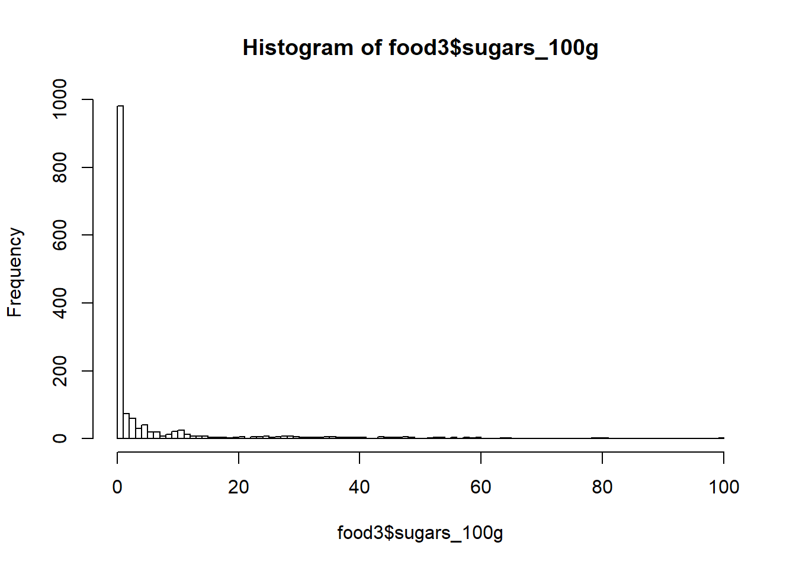
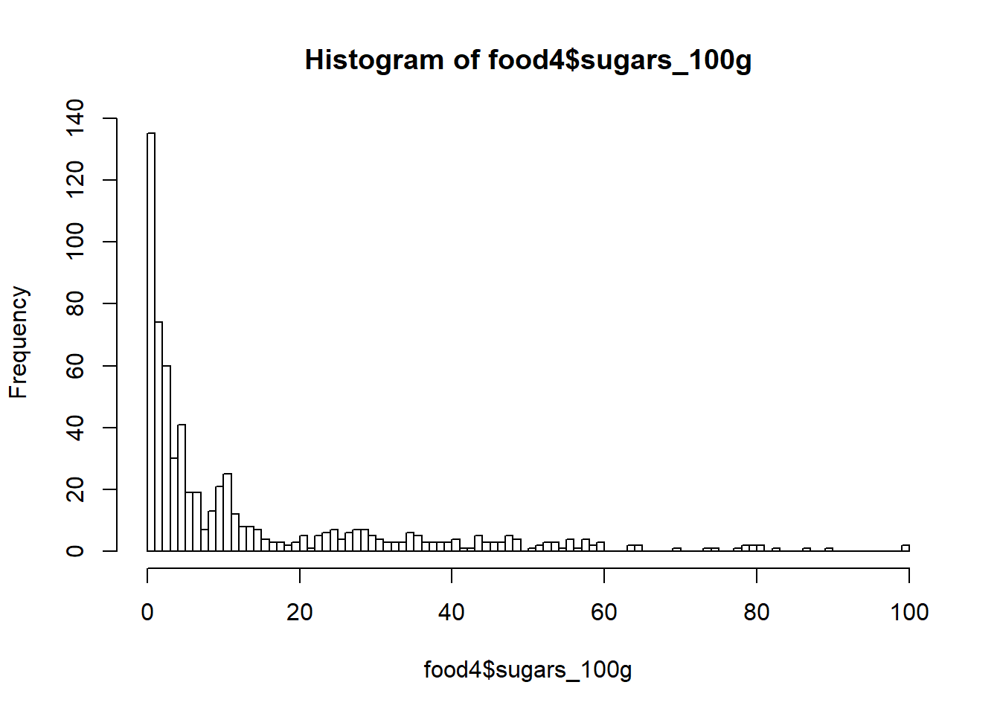

As a person of many talents, it’s time to take on a different job: nutrition analysis! Your goal is to analyze the sugar content of a sample of foods from around the world.
A large dataset called food.csv is ready for your use in the working directory. Instead of the usual read.csv(), however, you’re going to use the faster fread() from the data.table package. By default, the data will come in as a data table, but since you’re used to working with data frames, you can get fread() to return one by setting data.table = FALSE.
# Load data.table
library(data.table)
# Import food.csv as a data frame: food
food <- fread("food.csv", data.table = FALSE)Let’s get an idea of what the dataset looks like in order to know how to proceed.
# View summary of food
summary(food)## V1 code url creator created_t
## Min. : 1.0 Min. :100030 Length:1500 Length:1500 Min. :1.332e+09
## 1st Qu.: 375.8 1st Qu.:124975 Class :character Class :character 1st Qu.:1.394e+09
## Median : 750.5 Median :149514 Mode :character Mode :character Median :1.425e+09
## Mean : 750.5 Mean :149613 Mean :1.414e+09
## 3rd Qu.:1125.2 3rd Qu.:174506 3rd Qu.:1.436e+09
## Max. :1500.0 Max. :199880 Max. :1.453e+09
## created_datetime last_modified_t last_modified_datetime product_name generic_name
## Length:1500 Min. :1.340e+09 Length:1500 Length:1500 Length:1500
## Class :character 1st Qu.:1.424e+09 Class :character Class :character Class :character
## Mode :character Median :1.437e+09 Mode :character Mode :character Mode :character
## Mean :1.430e+09
## 3rd Qu.:1.446e+09
## Max. :1.453e+09
## quantity packaging packaging_tags brands brands_tags
## Length:1500 Length:1500 Length:1500 Length:1500 Length:1500
## Class :character Class :character Class :character Class :character Class :character
## Mode :character Mode :character Mode :character Mode :character Mode :character
##
##
##
## categories categories_tags categories_en origins origins_tags
## Length:1500 Length:1500 Length:1500 Length:1500 Length:1500
## Class :character Class :character Class :character Class :character Class :character
## Mode :character Mode :character Mode :character Mode :character Mode :character
##
##
##
## manufacturing_places manufacturing_places_tags labels labels_tags
## Length:1500 Length:1500 Length:1500 Length:1500
## Class :character Class :character Class :character Class :character
## Mode :character Mode :character Mode :character Mode :character
##
##
##
## labels_en emb_codes emb_codes_tags first_packaging_code_geo cities
## Length:1500 Length:1500 Length:1500 Length:1500 Mode:logical
## Class :character Class :character Class :character Class :character NA's:1500
## Mode :character Mode :character Mode :character Mode :character
##
##
##
## cities_tags purchase_places stores countries countries_tags
## Length:1500 Length:1500 Length:1500 Length:1500 Length:1500
## Class :character Class :character Class :character Class :character Class :character
## Mode :character Mode :character Mode :character Mode :character Mode :character
##
##
##
## countries_en ingredients_text allergens allergens_en traces
## Length:1500 Length:1500 Length:1500 Mode:logical Length:1500
## Class :character Class :character Class :character NA's:1500 Class :character
## Mode :character Mode :character Mode :character Mode :character
##
##
##
## traces_tags traces_en serving_size no_nutriments additives_n
## Length:1500 Length:1500 Length:1500 Mode:logical Min. : 0.000
## Class :character Class :character Class :character NA's:1500 1st Qu.: 0.000
## Mode :character Mode :character Mode :character Median : 1.000
## Mean : 1.846
## 3rd Qu.: 3.000
## Max. :17.000
## additives additives_tags additives_en ingredients_from_palm_oil_n
## Length:1500 Length:1500 Length:1500 Min. :0.0000
## Class :character Class :character Class :character 1st Qu.:0.0000
## Mode :character Mode :character Mode :character Median :0.0000
## Mean :0.0487
## 3rd Qu.:0.0000
## Max. :1.0000
## ingredients_from_palm_oil ingredients_from_palm_oil_tags ingredients_that_may_be_from_palm_oil_n
## Mode:logical Length:1500 Min. :0.0000
## NA's:1500 Class :character 1st Qu.:0.0000
## Mode :character Median :0.0000
## Mean :0.1379
## 3rd Qu.:0.0000
## Max. :4.0000
## ingredients_that_may_be_from_palm_oil ingredients_that_may_be_from_palm_oil_tags nutrition_grade_uk
## Mode:logical Length:1500 Mode:logical
## NA's:1500 Class :character NA's:1500
## Mode :character
##
##
##
## nutrition_grade_fr pnns_groups_1 pnns_groups_2 states states_tags
## Length:1500 Length:1500 Length:1500 Length:1500 Length:1500
## Class :character Class :character Class :character Class :character Class :character
## Mode :character Mode :character Mode :character Mode :character Mode :character
##
##
##
## states_en main_category main_category_en image_url image_small_url
## Length:1500 Length:1500 Length:1500 Length:1500 Length:1500
## Class :character Class :character Class :character Class :character Class :character
## Mode :character Mode :character Mode :character Mode :character Mode :character
##
##
##
## energy_100g energy_from_fat_100g fat_100g saturated_fat_100g butyric_acid_100g
## Min. : 0.0 Min. : 0.00 Min. : 0.00 Min. : 0.000 Mode:logical
## 1st Qu.: 369.8 1st Qu.: 35.98 1st Qu.: 0.90 1st Qu.: 0.200 NA's:1500
## Median : 966.5 Median : 237.00 Median : 6.00 Median : 1.700
## Mean :1083.2 Mean : 668.41 Mean : 13.39 Mean : 4.874
## 3rd Qu.:1641.5 3rd Qu.: 974.00 3rd Qu.: 20.00 3rd Qu.: 6.500
## Max. :3700.0 Max. :2900.00 Max. :100.00 Max. :57.000
## caproic_acid_100g caprylic_acid_100g capric_acid_100g lauric_acid_100g myristic_acid_100g
## Mode:logical Mode:logical Mode:logical Mode:logical Mode:logical
## NA's:1500 NA's:1500 NA's:1500 NA's:1500 NA's:1500
##
##
##
##
## palmitic_acid_100g stearic_acid_100g arachidic_acid_100g behenic_acid_100g lignoceric_acid_100g
## Mode:logical Mode:logical Mode:logical Mode:logical Mode:logical
## NA's:1500 NA's:1500 NA's:1500 NA's:1500 NA's:1500
##
##
##
##
## cerotic_acid_100g montanic_acid_100g melissic_acid_100g monounsaturated_fat_100g
## Mode:logical Mode:logical Mode:logical Min. : 0.00
## NA's:1500 NA's:1500 NA's:1500 1st Qu.: 3.87
## Median : 9.50
## Mean :19.77
## 3rd Qu.:29.00
## Max. :75.00
## polyunsaturated_fat_100g omega_3_fat_100g alpha_linolenic_acid_100g eicosapentaenoic_acid_100g
## Min. : 0.400 Min. : 0.033 Min. :0.0800 Min. :0.721
## 1st Qu.: 1.653 1st Qu.: 1.300 1st Qu.:0.0905 1st Qu.:0.721
## Median : 3.900 Median : 3.000 Median :0.1010 Median :0.721
## Mean : 9.986 Mean : 3.726 Mean :0.1737 Mean :0.721
## 3rd Qu.:12.700 3rd Qu.: 3.200 3rd Qu.:0.2205 3rd Qu.:0.721
## Max. :46.200 Max. :12.400 Max. :0.3400 Max. :0.721
## docosahexaenoic_acid_100g omega_6_fat_100g linoleic_acid_100g arachidonic_acid_100g
## Min. :1.09 Min. :0.25 Min. :0.5000 Mode:logical
## 1st Qu.:1.09 1st Qu.:0.25 1st Qu.:0.5165 NA's:1500
## Median :1.09 Median :0.25 Median :0.5330
## Mean :1.09 Mean :0.25 Mean :0.5330
## 3rd Qu.:1.09 3rd Qu.:0.25 3rd Qu.:0.5495
## Max. :1.09 Max. :0.25 Max. :0.5660
## gamma_linolenic_acid_100g dihomo_gamma_linolenic_acid_100g omega_9_fat_100g oleic_acid_100g
## Mode:logical Mode:logical Mode:logical Mode:logical
## NA's:1500 NA's:1500 NA's:1500 NA's:1500
##
##
##
##
## elaidic_acid_100g gondoic_acid_100g mead_acid_100g erucic_acid_100g nervonic_acid_100g
## Mode:logical Mode:logical Mode:logical Mode:logical Mode:logical
## NA's:1500 NA's:1500 NA's:1500 NA's:1500 NA's:1500
##
##
##
##
## trans_fat_100g cholesterol_100g carbohydrates_100g sugars_100g sucrose_100g glucose_100g
## Min. :0.0000 Min. :0.0000 Min. : 0.000 Min. : 0.00 Mode:logical Mode:logical
## 1st Qu.:0.0000 1st Qu.:0.0000 1st Qu.: 3.792 1st Qu.: 1.00 NA's:1500 NA's:1500
## Median :0.0000 Median :0.0000 Median : 13.500 Median : 4.05
## Mean :0.0105 Mean :0.0265 Mean : 27.958 Mean : 12.66
## 3rd Qu.:0.0000 3rd Qu.:0.0026 3rd Qu.: 55.000 3rd Qu.: 14.70
## Max. :0.1000 Max. :0.4300 Max. :100.000 Max. :100.00
## fructose_100g lactose_100g maltose_100g maltodextrins_100g starch_100g polyols_100g
## Min. :100 Min. :0.000 Mode:logical Mode:logical Min. : 0.00 Min. : 8.60
## 1st Qu.:100 1st Qu.:0.250 NA's:1500 NA's:1500 1st Qu.: 9.45 1st Qu.:59.10
## Median :100 Median :0.500 Median :39.50 Median :67.00
## Mean :100 Mean :2.933 Mean :30.73 Mean :56.06
## 3rd Qu.:100 3rd Qu.:4.400 3rd Qu.:42.85 3rd Qu.:69.80
## Max. :100 Max. :8.300 Max. :71.00 Max. :70.00
## fiber_100g proteins_100g casein_100g serum_proteins_100g nucleotides_100g
## Min. : 0.000 Min. : 0.000 Min. :1.1 Mode:logical Mode:logical
## 1st Qu.: 0.500 1st Qu.: 1.500 1st Qu.:1.1 NA's:1500 NA's:1500
## Median : 1.750 Median : 6.000 Median :1.1
## Mean : 2.823 Mean : 7.563 Mean :1.1
## 3rd Qu.: 3.500 3rd Qu.:10.675 3rd Qu.:1.1
## Max. :46.700 Max. :61.000 Max. :1.1
## salt_100g sodium_100g alcohol_100g vitamin_a_100g beta_carotene_100g
## Min. : 0.0000 Min. : 0.0000 Min. : 0.00 Min. :0.0000 Mode:logical
## 1st Qu.: 0.0438 1st Qu.: 0.0172 1st Qu.: 0.00 1st Qu.:0.0000 NA's:1500
## Median : 0.4498 Median : 0.1771 Median : 5.50 Median :0.0001
## Mean : 1.1205 Mean : 0.4409 Mean :10.07 Mean :0.0003
## 3rd Qu.: 1.1938 3rd Qu.: 0.4700 3rd Qu.:13.00 3rd Qu.:0.0006
## Max. :102.0000 Max. :40.0000 Max. :50.00 Max. :0.0013
## vitamin_d_100g vitamin_e_100g vitamin_k_100g vitamin_c_100g vitamin_b1_100g vitamin_b2_100g
## Min. :0e+00 Min. :0.0005 Min. :0 Min. :0.000 Min. :0.0001 Min. :0.0002
## 1st Qu.:0e+00 1st Qu.:0.0021 1st Qu.:0 1st Qu.:0.002 1st Qu.:0.0003 1st Qu.:0.0003
## Median :0e+00 Median :0.0044 Median :0 Median :0.019 Median :0.0004 Median :0.0009
## Mean :0e+00 Mean :0.0069 Mean :0 Mean :0.025 Mean :0.0006 Mean :0.0011
## 3rd Qu.:0e+00 3rd Qu.:0.0097 3rd Qu.:0 3rd Qu.:0.030 3rd Qu.:0.0010 3rd Qu.:0.0013
## Max. :1e-04 Max. :0.0320 Max. :0 Max. :0.217 Max. :0.0013 Max. :0.0066
## vitamin_pp_100g vitamin_b6_100g vitamin_b9_100g vitamin_b12_100g biotin_100g
## Min. :0.0006 Min. :0.0001 Min. :0e+00 Min. :0 Min. :0
## 1st Qu.:0.0033 1st Qu.:0.0002 1st Qu.:0e+00 1st Qu.:0 1st Qu.:0
## Median :0.0069 Median :0.0008 Median :1e-04 Median :0 Median :0
## Mean :0.0086 Mean :0.0112 Mean :1e-04 Mean :0 Mean :0
## 3rd Qu.:0.0140 3rd Qu.:0.0012 3rd Qu.:2e-04 3rd Qu.:0 3rd Qu.:0
## Max. :0.0160 Max. :0.2000 Max. :2e-04 Max. :0 Max. :0
## pantothenic_acid_100g silica_100g bicarbonate_100g potassium_100g chloride_100g
## Min. :0.0000 Min. :8e-04 Min. :0.0006 Min. :0.0000 Min. :0.0003
## 1st Qu.:0.0007 1st Qu.:8e-04 1st Qu.:0.0678 1st Qu.:0.0650 1st Qu.:0.0006
## Median :0.0020 Median :8e-04 Median :0.1350 Median :0.1940 Median :0.0009
## Mean :0.0027 Mean :8e-04 Mean :0.1692 Mean :0.3288 Mean :0.0144
## 3rd Qu.:0.0051 3rd Qu.:8e-04 3rd Qu.:0.2535 3rd Qu.:0.3670 3rd Qu.:0.0214
## Max. :0.0060 Max. :8e-04 Max. :0.3720 Max. :1.4300 Max. :0.0420
## calcium_100g phosphorus_100g iron_100g magnesium_100g zinc_100g copper_100g
## Min. :0.0000 Min. :0.0430 Min. :0.0000 Min. :0.0000 Min. :0.0005 Min. :0e+00
## 1st Qu.:0.0450 1st Qu.:0.1938 1st Qu.:0.0012 1st Qu.:0.0670 1st Qu.:0.0009 1st Qu.:1e-04
## Median :0.1200 Median :0.3185 Median :0.0042 Median :0.1040 Median :0.0017 Median :1e-04
## Mean :0.2040 Mean :0.3777 Mean :0.0045 Mean :0.1066 Mean :0.0016 Mean :1e-04
## 3rd Qu.:0.1985 3rd Qu.:0.4340 3rd Qu.:0.0077 3rd Qu.:0.1300 3rd Qu.:0.0022 3rd Qu.:1e-04
## Max. :1.0000 Max. :1.1550 Max. :0.0137 Max. :0.3330 Max. :0.0026 Max. :1e-04
## manganese_100g fluoride_100g selenium_100g chromium_100g molybdenum_100g iodine_100g
## Min. :0 Min. :0 Min. :0 Mode:logical Mode:logical Min. :0
## 1st Qu.:0 1st Qu.:0 1st Qu.:0 NA's:1500 NA's:1500 1st Qu.:0
## Median :0 Median :0 Median :0 Median :0
## Mean :0 Mean :0 Mean :0 Mean :0
## 3rd Qu.:0 3rd Qu.:0 3rd Qu.:0 3rd Qu.:0
## Max. :0 Max. :0 Max. :0 Max. :0
## caffeine_100g taurine_100g ph_100g fruits_vegetables_nuts_100g
## Mode:logical Mode:logical Mode:logical Min. : 2.00
## NA's:1500 NA's:1500 NA's:1500 1st Qu.:11.25
## Median :42.00
## Mean :36.88
## 3rd Qu.:52.25
## Max. :80.00
## collagen_meat_protein_ratio_100g cocoa_100g chlorophyl_100g carbon_footprint_100g
## Min. :12.00 Min. :30 Mode:logical Min. : 12.00
## 1st Qu.:13.50 1st Qu.:47 NA's:1500 1st Qu.: 97.42
## Median :15.00 Median :60 Median :182.85
## Mean :15.67 Mean :57 Mean :131.18
## 3rd Qu.:17.50 3rd Qu.:70 3rd Qu.:190.78
## Max. :20.00 Max. :81 Max. :198.70
## nutrition_score_fr_100g nutrition_score_uk_100g
## Min. :-12.000 Min. :-12.000
## 1st Qu.: 1.000 1st Qu.: 0.000
## Median : 7.000 Median : 6.000
## Mean : 7.941 Mean : 7.631
## 3rd Qu.: 15.000 3rd Qu.: 16.000
## Max. : 28.000 Max. : 28.000
## [ reached getOption("max.print") -- omitted 1 row ]# View head of food
head(food)## V1 code
## 1 1 100030
## 2 2 100050
## 3 3 100079
## 4 4 100094
## 5 5 100124
## 6 6 100136
## url
## 1 http://world-en.openfoodfacts.org/product/3222475745867/confiture-de-fraise-fraise-des-bois-au-sucre-de-canne-casino-delices
## 2 http://world-en.openfoodfacts.org/product/5410976880110/guylian-sea-shells-selection
## 3 http://world-en.openfoodfacts.org/product/3264750423503/pates-de-fruits-aromatisees-jacquot
## 4 http://world-en.openfoodfacts.org/product/8006040247001/nata-vegetal-a-base-de-soja-valsoia
## 5 http://world-en.openfoodfacts.org/product/8480000340764/semillas-de-girasol-con-cascara-tostadas-aguasal-hacendado
## 6 http://world-en.openfoodfacts.org/product/0087703177727/soft-drink
## creator created_t created_datetime last_modified_t last_modified_datetime
## 1 sebleouf 1424747544 2015-02-24T03:12:24Z 1438445887 2015-08-01T16:18:07Z
## 2 foodorigins 1450316429 2015-12-17T01:40:29Z 1450817956 2015-12-22T20:59:16Z
## 3 domdom26 1428674916 2015-04-10T14:08:36Z 1428739289 2015-04-11T08:01:29Z
## 4 javichu 1420416591 2015-01-05T00:09:51Z 1420417876 2015-01-05T00:31:16Z
## 5 javichu 1420501121 2015-01-05T23:38:41Z 1445700917 2015-10-24T15:35:17Z
## 6 foodorigins 1437983923 2015-07-27T07:58:43Z 1445577476 2015-10-23T05:17:56Z
## product_name
## 1 Confiture de fraise fraise des bois au sucre de canne
## 2 Guylian Sea Shells Selection
## 3 Pâtes de fruits aromatisées
## 4 Nata vegetal a base de soja "Valsoia"
## 5 Semillas de girasol con cáscara tostadas aguasal
## 6 Soft Drink
## generic_name quantity
## 1 265 g
## 2 375g
## 3 Pâtes de fruits 1 kg
## 4 Nata vegetal a base de soja 200 ml
## 5 Semillas de girasol con cáscara tostadas aguasal 200 g
## 6
## packaging
## 1 Bocal,Verre
## 2 Plastic,Box
## 3 Carton,plastique
## 4 Tetra Brik
## 5 Bolsa de plástico,Envasado en atmósfera protectora
## 6
## packaging_tags brands
## 1 bocal,verre Casino Délices
## 2 plastic,box Guylian
## 3 carton,plastique Jacquot
## 4 tetra-brik Valsoia,//Propiedad de://,Valsoia S.p.A.
## 5 bolsa-de-plastico,envasado-en-atmosfera-protectora Hacendado,//Propiedad de://,Mercadona S.A.
## 6
## brands_tags
## 1 casino-delices
## 2 guylian
## 3 jacquot
## 4 valsoia,propiedad-de,valsoia-s-p-a
## 5 hacendado,propiedad-de,mercadona-s-a
## 6
## categories
## 1 Aliments et boissons à base de végétaux,Aliments d'origine végétale,Aliments à base de fruits et de légumes,Petit-déjeuners,Produits à tartiner,Fruits et produits dérivés,Pâtes à tartiner végétaux,Produits à tartiner sucrés,Confitures et marmelades,Confitures,Confitures de fruits,Confitures de fruits rouges,Confitures de fraises
## 2 Chocolate
## 3 pâtes de fruits
## 4 Alimentos y bebidas de origen vegetal,Alimentos de origen vegetal,Natas vegetales,Natas vegetales a base de soja para cocinar,Natas vegetales para cocinar
## 5 Semillas de girasol y derivados, Semillas, Semillas de girasol, Semillas de girasol con cáscara, Semillas de girasol tostadas, Semillas de girasol con cáscara tostadas, Semillas de girasol con cáscara tostadas aguasal
## 6
## categories_tags
## 1 en:plant-based-foods-and-beverages,en:plant-based-foods,en:fruits-and-vegetables-based-foods,en:breakfasts,en:spreads,en:fruits-based-foods,en:plant-based-spreads,en:sweet-spreads,en:fruit-preserves,en:jams,en:fruit-jams,en:berry-jams,en:strawberry-jams
## 2 en:sugary-snacks,en:chocolates
## 3 en:plant-based-foods-and-beverages,en:plant-based-foods,en:fruits-and-vegetables-based-foods,en:sugary-snacks,en:confectioneries,en:fruits-based-foods,en:fruit-pastes
## 4 en:plant-based-foods-and-beverages,en:plant-based-foods,en:plant-based-creams,en:plant-based-creams-for-cooking,en:soy-based-creams-for-cooking
## 5 en:plant-based-foods-and-beverages,en:plant-based-foods,en:seeds,en:sunflower-seeds-and-their-products,en:sunflower-seeds,en:roasted-sunflower-seeds,en:unshelled-sunflower-seeds,en:roasted-unshelled-sunflower-seeds,es:semillas-de-girasol-con-cascara-tostadas-aguasal
## 6
## categories_en
## 1 Plant-based foods and beverages,Plant-based foods,Fruits and vegetables based foods,Breakfasts,Spreads,Fruits based foods,Plant-based spreads,Sweet spreads,Fruit preserves,Jams,Fruit jams,Berry jams,Strawberry jams
## 2 Sugary snacks,Chocolates
## 3 Plant-based foods and beverages,Plant-based foods,Fruits and vegetables based foods,Sugary snacks,Confectioneries,Fruits based foods,Fruit pastes
## 4 Plant-based foods and beverages,Plant-based foods,Plant-based creams,Plant-based creams for cooking,Soy-based creams for cooking
## 5 Plant-based foods and beverages,Plant-based foods,Seeds,Sunflower seeds and their products,Sunflower seeds,Roasted sunflower seeds,Unshelled sunflower seeds,Roasted unshelled sunflower seeds,es:Semillas-de-girasol-con-cascara-tostadas-aguasal
## 6
## origins origins_tags manufacturing_places
## 1 France
## 2 Belgium
## 3
## 4 Italia
## 5 Argentina argentina Beniparrell,Valencia (provincia),Comunidad Valenciana,España
## 6 South Korea south-korea South Korea
## manufacturing_places_tags
## 1 france
## 2 belgium
## 3
## 4 italia
## 5 beniparrell,valencia-provincia,comunidad-valenciana,espana
## 6 south-korea
## labels
## 1
## 2
## 3
## 4 Vegetariano,Vegano,Sin gluten,Sin OMG,Sin lactosa
## 5 Vegetariano,Vegano,Sin gluten
## 6
## labels_tags
## 1
## 2
## 3
## 4 en:vegetarian,en:vegan,en:gluten-free,en:no-gmos,en:no-lactose
## 5 en:vegetarian,en:vegan,en:gluten-free
## 6
## labels_en emb_codes
## 1 EMB 78015
## 2
## 3
## 4 Vegetarian,Vegan,Gluten-free,No GMOs,No lactose
## 5 Vegetarian,Vegan,Gluten-free ES 21.016540/V EC,ENVASADOR:,IMPORTACO S.A.
## 6
## emb_codes_tags first_packaging_code_geo cities cities_tags
## 1 emb-78015 48.983333,2.066667 NA andresy-yvelines-france
## 2 NA
## 3 NA
## 4 NA
## 5 es-21-016540-v-ec,envasador,importaco-s-a NA
## 6 NA
## purchase_places stores countries countries_tags countries_en
## 1 Lyon,France Casino France en:france France
## 2 NSW,Australia Australia en:australia Australia
## 3 France France en:france France
## 4 Madrid,España El Corte Inglés España en:spain Spain
## 5 Madrid,España Mercadona España en:spain Spain
## 6 Australia en:australia Australia
## ingredients_text
## 1 Sucre de canne, fraises 40 g, fraises des bois 14 g, gélifiant : pectines de fruits, jus de citron concentré. Préparée avec 54 g de fruits pour 100 g de produit fini.
## 2
## 3 Pulpe de pommes 50% , sucre, sirop de glucose, gélifiant : pectine, acidifiant : acide citrique, arômes, colorants naturels : extrait de paprika â\200” complexes cuivreâ\200”chlorophyllines â\200” curcumine â\200” antnocyanes
## 4 Extracto de soja (78%) (agua, semillas de soja 8,3%), grasas vegetales, jarabe de glucosa, dextrosa, emulsionante: mono- y diglicéridos de ácidos grasos (E-471), sal marina, estabilizantes: goma xantana (E-415), carragenatos (E-407), goma guar (E-412); aromas, antioxidante: extractos de tocoferoles (de soja) (E-306). (Nota: el envase en italiano del paquete -que puede verse en el enlace-, especifica que el producto es 100% vegetal. Por tanto los mono- y diglicéridos de ácidos grasos (E-471) son de origen no animal).
## 5 Pipas de girasol y sal.
## 6
## allergens allergens_en traces traces_tags traces_en serving_size
## 1 NA Lait,Fruits à coque en:milk,en:nuts Milk,Nuts 15 g
## 2 NA
## 3 NA
## 4 NA
## 5 NA Frutos de cáscara,Cacahuetes en:nuts,en:peanuts Nuts,Peanuts
## 6 NA
## no_nutriments additives_n
## 1 NA 1
## 2 NA NA
## 3 NA 2
## 4 NA 5
## 5 NA 0
## 6 NA NA
## additives
## 1 [ sucre-de-canne -> fr:sucre-de-canne ] [ sucre-de -> fr:sucre-de ] [ sucre -> fr:sucre ] [ fraises-40-g -> fr:fraises-40-g ] [ fraises-40 -> fr:fraises-40 ] [ fraises -> fr:fraises ] [ fraises-des-bois-14-g -> fr:fraises-des-bois-14-g ] [ fraises-des-bois-14 -> fr:fraises-des-bois-14 ] [ fraises-des-bois -> fr:fraises-des-bois ] [ fraises-des -> fr:fraises-des ] [ fraises -> fr:fraises ] [ pectines-de-fruits -> fr:pectines-de-fruits ] [ pectines-de -> fr:pectines-de ] [ pectines -> en:e440 -> exists ] [ jus-de-citron-concentre-preparee-avec-54-g-de-fruits-pour-100-g-de-produit-fini -> fr:jus-de-citron-concentre-preparee-avec-54-g-de-fruits-pour-100-g-de-produit-fini ] [ jus-de-citron-concentre-preparee-avec-54-g-de-fruits-pour-100-g-de-produit -> fr:jus-de-citron-concentre-preparee-avec-54-g-de-fruits-pour-100-g-de-produit ] [ jus-de-citron-concentre-preparee-avec-54-g-de-fruits-pour-100-g-de -> fr:jus-de-citron-concentre-preparee-avec-54-g-de-fruits-pour-100-g-de ] [ jus-de-citron-concentre-preparee-avec-54-g-de-fruits-pour-100-g -> fr:jus-de-citron-concentre-preparee-avec-54-g-de-fruits-pour-100-g ] [ jus-de-citron-concentre-preparee-avec-54-g-de-fruits-pour-100 -> fr:jus-de-citron-concentre-preparee-avec-54-g-de-fruits-pour-100 ] [ jus-de-citron-concentre-preparee-avec-54-g-de-fruits-pour -> fr:jus-de-citron-concentre-preparee-avec-54-g-de-fruits-pour ] [ jus-de-citron-concentre-preparee-avec-54-g-de-fruits -> fr:jus-de-citron-concentre-preparee-avec-54-g-de-fruits ] [ jus-de-citron-concentre-preparee-avec-54-g-de -> fr:jus-de-citron-concentre-preparee-avec-54-g-de ] [ jus-de-citron-concentre-preparee-avec-54-g -> fr:jus-de-citron-concentre-preparee-avec-54-g ] [ jus-de-citron-concentre-preparee-avec-54 -> fr:jus-de-citron-concentre-preparee-avec-54 ] [ jus-de-citron-concentre-preparee-avec -> fr:jus-de-citron-concentre-preparee-avec ] [ jus-de-citron-concentre-preparee -> fr:jus-de-citron-concentre-preparee ] [ jus-de-citron-concentre -> fr:jus-de-citron-concentre ] [ jus-de-citron -> fr:jus-de-citron ] [ jus-de -> fr:jus-de ] [ jus -> fr:jus ]
## 2
## 3 [ pulpe-de-pommes-50 -> fr:pulpe-de-pommes-50 ] [ pulpe-de-pommes -> fr:pulpe-de-pommes ] [ pulpe-de -> fr:pulpe-de ] [ pulpe -> fr:pulpe ] [ sucre -> fr:sucre ] [ sirop-de-glucose -> fr:sirop-de-glucose ] [ sirop-de -> fr:sirop-de ] [ sirop -> fr:sirop ] [ pectine -> en:e440 -> exists ] [ acide-citrique -> en:e330 -> exists ] [ aromes -> fr:aromes ] [ naturels -> fr:naturels ] [ extrait-de-paprika-complexes-cuivre-chlorophyllines-curcumine-antnocyanes -> fr:extrait-de-paprika-complexes-cuivre-chlorophyllines-curcumine-antnocyanes ] [ extrait-de-paprika-complexes-cuivre-chlorophyllines-curcumine -> fr:extrait-de-paprika-complexes-cuivre-chlorophyllines-curcumine ] [ extrait-de-paprika-complexes-cuivre-chlorophyllines -> fr:extrait-de-paprika-complexes-cuivre-chlorophyllines ] [ extrait-de-paprika-complexes-cuivre -> fr:extrait-de-paprika-complexes-cuivre ] [ extrait-de-paprika-complexes -> fr:extrait-de-paprika-complexes ] [ extrait-de-paprika -> fr:extrait-de-paprika ] [ extrait-de -> fr:extrait-de ] [ extrait -> fr:extrait ]
## 4 [ extracto-de-soja -> es:extracto-de-soja ] [ 78 -> es:78 ] [ agua -> es:agua ] [ semillas-de-soja-8 -> es:semillas-de-soja-8 ] [ 3 -> en:fd-c ] [ grasas-vegetales -> es:grasas-vegetales ] [ jarabe-de-glucosa -> es:jarabe-de-glucosa ] [ dextrosa -> es:dextrosa ] [ emulsionante -> es:emulsionante ] [ mono-y-digliceridos-de-acidos-grasos -> en:e471 -> exists ] [ e471 -> en:e471 ] [ sal-marina -> es:sal-marina ] [ estabilizantes -> es:estabilizantes ] [ goma-xantana -> en:e415 -> exists ] [ e415 -> en:e415 ] [ carragenatos -> en:e407 -> exists ] [ e407 -> en:e407 ] [ goma-guar -> en:e412 -> exists ] [ e412 -> en:e412 ] [ aromas -> es:aromas ] [ antioxidante -> es:antioxidante ] [ extractos-de-tocoferoles -> es:extractos-de-tocoferoles ] [ de-soja -> es:de-soja ] [ e306 -> en:e306 -> exists ] [ nota -> es:nota ] [ el-envase-en-italiano-del-paquete-que-puede-verse-en-el-enlace -> es:el-envase-en-italiano-del-paquete-que-puede-verse-en-el-enlace ] [ especifica-que-el-producto-es-100-vegetal-por-tanto-los-mono-y-digliceridos-de-acidos-grasos -> es:especifica-que-el-producto-es-100-vegetal-por-tanto-los-mono-y-digliceridos-de-acidos-grasos ] [ e471 -> en:e471 ] [ son-de-origen-no-animal -> es:son-de-origen-no-animal ] [ -> es: ]
## 5 [ pipas-de-girasol-y-sal -> es:pipas-de-girasol-y-sal ]
## 6
## additives_tags
## 1 en:e440
## 2
## 3 en:e440,en:e330
## 4 en:e471,en:e415,en:e407,en:e412,en:e306
## 5
## 6
## additives_en
## 1 E440 - Pectins
## 2
## 3 E440 - Pectins,E330 - Citric acid
## 4 E471 - Mono- and diglycerides of fatty acids,E415 - Xanthan gum,E407 - Carrageenan,E412 - Guar gum,E306 - Tocopherol-rich extract
## 5
## 6
## ingredients_from_palm_oil_n ingredients_from_palm_oil ingredients_from_palm_oil_tags
## 1 0 NA
## 2 NA NA
## 3 0 NA
## 4 0 NA
## 5 0 NA
## 6 NA NA
## ingredients_that_may_be_from_palm_oil_n ingredients_that_may_be_from_palm_oil
## 1 0 NA
## 2 NA NA
## 3 0 NA
## 4 1 NA
## 5 0 NA
## 6 NA NA
## ingredients_that_may_be_from_palm_oil_tags nutrition_grade_uk nutrition_grade_fr
## 1 NA d
## 2 NA
## 3 NA
## 4 e471-mono-et-diglycerides-d-acides-gras-alimentaires NA d
## 5 NA d
## 6 NA
## pnns_groups_1 pnns_groups_2
## 1 Sugary snacks Sweets
## 2 Sugary snacks Chocolate products
## 3 Fruits and vegetables Fruits
## 4 unknown unknown
## 5 unknown unknown
## 6 unknown unknown
## states
## 1 en:to-be-checked, en:complete, en:nutrition-facts-completed, en:ingredients-completed, en:expiration-date-to-be-completed, en:characteristics-completed, en:photos-validated, en:photos-uploaded
## 2 en:to-be-completed, en:nutrition-facts-to-be-completed, en:ingredients-to-be-completed, en:expiration-date-to-be-completed, en:characteristics-completed, en:photos-validated, en:photos-uploaded
## 3 en:to-be-checked, en:complete, en:nutrition-facts-completed, en:ingredients-completed, en:expiration-date-to-be-completed, en:characteristics-completed, en:photos-validated, en:photos-uploaded
## 4 en:to-be-checked, en:complete, en:nutrition-facts-completed, en:ingredients-completed, en:expiration-date-completed, en:characteristics-completed, en:photos-validated, en:photos-uploaded
## 5 en:to-be-checked, en:complete, en:nutrition-facts-completed, en:ingredients-completed, en:expiration-date-completed, en:characteristics-completed, en:photos-validated, en:photos-uploaded
## 6 en:to-be-completed, en:nutrition-facts-to-be-completed, en:ingredients-to-be-completed, en:expiration-date-to-be-completed, en:characteristics-to-be-completed, en:categories-to-be-completed, en:brands-to-be-completed, en:packaging-to-be-completed, en:quantity-to-be-completed, en:photos-to-be-validated, en:photos-uploaded
## states_tags
## 1 en:to-be-checked,en:complete,en:nutrition-facts-completed,en:ingredients-completed,en:expiration-date-to-be-completed,en:characteristics-completed,en:photos-validated,en:photos-uploaded
## 2 en:to-be-completed,en:nutrition-facts-to-be-completed,en:ingredients-to-be-completed,en:expiration-date-to-be-completed,en:characteristics-completed,en:photos-validated,en:photos-uploaded
## 3 en:to-be-checked,en:complete,en:nutrition-facts-completed,en:ingredients-completed,en:expiration-date-to-be-completed,en:characteristics-completed,en:photos-validated,en:photos-uploaded
## 4 en:to-be-checked,en:complete,en:nutrition-facts-completed,en:ingredients-completed,en:expiration-date-completed,en:characteristics-completed,en:photos-validated,en:photos-uploaded
## 5 en:to-be-checked,en:complete,en:nutrition-facts-completed,en:ingredients-completed,en:expiration-date-completed,en:characteristics-completed,en:photos-validated,en:photos-uploaded
## 6 en:to-be-completed,en:nutrition-facts-to-be-completed,en:ingredients-to-be-completed,en:expiration-date-to-be-completed,en:characteristics-to-be-completed,en:categories-to-be-completed,en:brands-to-be-completed,en:packaging-to-be-completed,en:quantity-to-be-completed,en:photos-to-be-validated,en:photos-uploaded
## states_en
## 1 To be checked,Complete,Nutrition facts completed,Ingredients completed,Expiration date to be completed,Characteristics completed,Photos validated,Photos uploaded
## 2 To be completed,Nutrition facts to be completed,Ingredients to be completed,Expiration date to be completed,Characteristics completed,Photos validated,Photos uploaded
## 3 To be checked,Complete,Nutrition facts completed,Ingredients completed,Expiration date to be completed,Characteristics completed,Photos validated,Photos uploaded
## 4 To be checked,Complete,Nutrition facts completed,Ingredients completed,Expiration date completed,Characteristics completed,Photos validated,Photos uploaded
## 5 To be checked,Complete,Nutrition facts completed,Ingredients completed,Expiration date completed,Characteristics completed,Photos validated,Photos uploaded
## 6 To be completed,Nutrition facts to be completed,Ingredients to be completed,Expiration date to be completed,Characteristics to be completed,Categories to be completed,Brands to be completed,Packaging to be completed,Quantity to be completed,Photos to be validated,Photos uploaded
## main_category main_category_en
## 1 en:plant-based-foods-and-beverages Plant-based foods and beverages
## 2 en:sugary-snacks Sugary snacks
## 3 en:plant-based-foods-and-beverages Plant-based foods and beverages
## 4 en:plant-based-foods-and-beverages Plant-based foods and beverages
## 5 en:plant-based-foods-and-beverages Plant-based foods and beverages
## 6
## image_url
## 1 http://en.openfoodfacts.org/images/products/322/247/574/5867/front.8.400.jpg
## 2 http://en.openfoodfacts.org/images/products/541/097/688/0110/front.7.400.jpg
## 3 http://en.openfoodfacts.org/images/products/326/475/042/3503/front.6.400.jpg
## 4 http://en.openfoodfacts.org/images/products/800/604/024/7001/front.7.400.jpg
## 5 http://en.openfoodfacts.org/images/products/848/000/034/0764/front.6.400.jpg
## 6 http://en.openfoodfacts.org/images/products/008/770/317/7727/front.8.400.jpg
## image_small_url energy_100g
## 1 http://en.openfoodfacts.org/images/products/322/247/574/5867/front.8.200.jpg 918
## 2 http://en.openfoodfacts.org/images/products/541/097/688/0110/front.7.200.jpg NA
## 3 http://en.openfoodfacts.org/images/products/326/475/042/3503/front.6.200.jpg NA
## 4 http://en.openfoodfacts.org/images/products/800/604/024/7001/front.7.200.jpg 766
## 5 http://en.openfoodfacts.org/images/products/848/000/034/0764/front.6.200.jpg 2359
## 6 http://en.openfoodfacts.org/images/products/008/770/317/7727/front.8.200.jpg NA
## energy_from_fat_100g fat_100g saturated_fat_100g butyric_acid_100g caproic_acid_100g
## 1 NA 0.0 0.0 NA NA
## 2 NA NA NA NA NA
## 3 NA NA NA NA NA
## 4 NA 16.7 9.9 NA NA
## 5 NA 45.5 5.2 NA NA
## 6 NA NA NA NA NA
## caprylic_acid_100g capric_acid_100g lauric_acid_100g myristic_acid_100g palmitic_acid_100g
## 1 NA NA NA NA NA
## 2 NA NA NA NA NA
## 3 NA NA NA NA NA
## 4 NA NA NA NA NA
## 5 NA NA NA NA NA
## 6 NA NA NA NA NA
## stearic_acid_100g arachidic_acid_100g behenic_acid_100g lignoceric_acid_100g cerotic_acid_100g
## 1 NA NA NA NA NA
## 2 NA NA NA NA NA
## 3 NA NA NA NA NA
## 4 NA NA NA NA NA
## 5 NA NA NA NA NA
## 6 NA NA NA NA NA
## montanic_acid_100g melissic_acid_100g monounsaturated_fat_100g polyunsaturated_fat_100g
## 1 NA NA NA NA
## 2 NA NA NA NA
## 3 NA NA NA NA
## 4 NA NA 2.9 3.9
## 5 NA NA 9.5 32.8
## 6 NA NA NA NA
## omega_3_fat_100g alpha_linolenic_acid_100g eicosapentaenoic_acid_100g docosahexaenoic_acid_100g
## 1 NA NA NA NA
## 2 NA NA NA NA
## 3 NA NA NA NA
## 4 NA NA NA NA
## 5 NA NA NA NA
## 6 NA NA NA NA
## omega_6_fat_100g linoleic_acid_100g arachidonic_acid_100g gamma_linolenic_acid_100g
## 1 NA NA NA NA
## 2 NA NA NA NA
## 3 NA NA NA NA
## 4 NA NA NA NA
## 5 NA NA NA NA
## 6 NA NA NA NA
## dihomo_gamma_linolenic_acid_100g omega_9_fat_100g oleic_acid_100g elaidic_acid_100g
## 1 NA NA NA NA
## 2 NA NA NA NA
## 3 NA NA NA NA
## 4 NA NA NA NA
## 5 NA NA NA NA
## 6 NA NA NA NA
## gondoic_acid_100g mead_acid_100g erucic_acid_100g nervonic_acid_100g trans_fat_100g cholesterol_100g
## 1 NA NA NA NA NA NA
## 2 NA NA NA NA NA NA
## 3 NA NA NA NA NA NA
## 4 NA NA NA NA NA 2e-04
## 5 NA NA NA NA NA NA
## 6 NA NA NA NA NA NA
## carbohydrates_100g sugars_100g sucrose_100g glucose_100g fructose_100g lactose_100g maltose_100g
## 1 54.0 54.0 NA NA NA NA NA
## 2 NA NA NA NA NA NA NA
## 3 NA NA NA NA NA NA NA
## 4 5.7 4.2 NA NA NA NA NA
## 5 17.3 2.7 NA NA NA NA NA
## 6 NA NA NA NA NA NA NA
## maltodextrins_100g starch_100g polyols_100g fiber_100g proteins_100g casein_100g serum_proteins_100g
## 1 NA NA NA NA 0.0 NA NA
## 2 NA NA NA NA NA NA NA
## 3 NA NA NA NA NA NA NA
## 4 NA NA NA 0.2 2.9 NA NA
## 5 NA NA NA 9.0 18.2 NA NA
## 6 NA NA NA NA NA NA NA
## nucleotides_100g salt_100g sodium_100g alcohol_100g vitamin_a_100g beta_carotene_100g vitamin_d_100g
## 1 NA 0.0000 0.00 NA NA NA NA
## 2 NA NA NA NA NA NA NA
## 3 NA NA NA NA NA NA NA
## 4 NA 0.0508 0.02 NA NA NA NA
## 5 NA 3.9878 1.57 NA NA NA NA
## 6 NA NA NA NA NA NA NA
## vitamin_e_100g vitamin_k_100g vitamin_c_100g vitamin_b1_100g vitamin_b2_100g vitamin_pp_100g
## 1 NA NA NA NA NA NA
## 2 NA NA NA NA NA NA
## 3 NA NA NA NA NA NA
## 4 NA NA NA NA NA NA
## 5 NA NA NA NA NA NA
## 6 NA NA NA NA NA NA
## vitamin_b6_100g vitamin_b9_100g vitamin_b12_100g biotin_100g pantothenic_acid_100g silica_100g
## 1 NA NA NA NA NA NA
## 2 NA NA NA NA NA NA
## 3 NA NA NA NA NA NA
## 4 NA NA NA NA NA NA
## 5 NA NA NA NA NA NA
## 6 NA NA NA NA NA NA
## bicarbonate_100g potassium_100g chloride_100g calcium_100g phosphorus_100g iron_100g magnesium_100g
## 1 NA NA NA NA NA NA NA
## 2 NA NA NA NA NA NA NA
## 3 NA NA NA NA NA NA NA
## 4 NA NA NA NA NA NA NA
## 5 NA NA NA NA 1.155 0.0038 0.129
## 6 NA NA NA NA NA NA NA
## zinc_100g copper_100g manganese_100g fluoride_100g selenium_100g chromium_100g molybdenum_100g
## 1 NA NA NA NA NA NA NA
## 2 NA NA NA NA NA NA NA
## 3 NA NA NA NA NA NA NA
## 4 NA NA NA NA NA NA NA
## 5 NA NA NA NA NA NA NA
## 6 NA NA NA NA NA NA NA
## iodine_100g caffeine_100g taurine_100g ph_100g fruits_vegetables_nuts_100g
## 1 NA NA NA NA 54
## 2 NA NA NA NA NA
## 3 NA NA NA NA NA
## 4 NA NA NA NA NA
## 5 NA NA NA NA NA
## 6 NA NA NA NA NA
## collagen_meat_protein_ratio_100g cocoa_100g chlorophyl_100g carbon_footprint_100g
## 1 NA NA NA NA
## 2 NA NA NA NA
## 3 NA NA NA NA
## 4 NA NA NA NA
## 5 NA NA NA NA
## 6 NA NA NA NA
## nutrition_score_fr_100g nutrition_score_uk_100g
## 1 11 11
## 2 NA NA
## 3 NA NA
## 4 11 11
## 5 17 17
## 6 NA NA# View structure of food
str(food)## 'data.frame': 1500 obs. of 160 variables:
## $ V1 : int 1 2 3 4 5 6 7 8 9 10 ...
## $ code : int 100030 100050 100079 100094 100124 100136 100194 100221 100257 100258 ...
## $ url : chr "http://world-en.openfoodfacts.org/product/3222475745867/confiture-de-fraise-fraise-des-bois-au-sucre-de-canne-casino-delices" "http://world-en.openfoodfacts.org/product/5410976880110/guylian-sea-shells-selection" "http://world-en.openfoodfacts.org/product/3264750423503/pates-de-fruits-aromatisees-jacquot" "http://world-en.openfoodfacts.org/product/8006040247001/nata-vegetal-a-base-de-soja-valsoia" ...
## $ creator : chr "sebleouf" "foodorigins" "domdom26" "javichu" ...
## $ created_t : int 1424747544 1450316429 1428674916 1420416591 1420501121 1437983923 1442420988 1435686217 1436991777 1400516512 ...
## $ created_datetime : chr "2015-02-24T03:12:24Z" "2015-12-17T01:40:29Z" "2015-04-10T14:08:36Z" "2015-01-05T00:09:51Z" ...
## $ last_modified_t : int 1438445887 1450817956 1428739289 1420417876 1445700917 1445577476 1442420988 1451405288 1436991779 1437236856 ...
## $ last_modified_datetime : chr "2015-08-01T16:18:07Z" "2015-12-22T20:59:16Z" "2015-04-11T08:01:29Z" "2015-01-05T00:31:16Z" ...
## $ product_name : chr "Confiture de fraise fraise des bois au sucre de canne" "Guylian Sea Shells Selection" "Pâtes de fruits aromatisées" "Nata vegetal a base de soja "Valsoia"" ...
## $ generic_name : chr "" "" "Pâtes de fruits" "Nata vegetal a base de soja" ...
## $ quantity : chr "265 g" "375g" "1 kg" "200 ml" ...
## $ packaging : chr "Bocal,Verre" "Plastic,Box" "Carton,plastique" "Tetra Brik" ...
## $ packaging_tags : chr "bocal,verre" "plastic,box" "carton,plastique" "tetra-brik" ...
## $ brands : chr "Casino Délices" "Guylian" "Jacquot" "Valsoia,//Propiedad de://,Valsoia S.p.A." ...
## $ brands_tags : chr "casino-delices" "guylian" "jacquot" "valsoia,propiedad-de,valsoia-s-p-a" ...
## $ categories : chr "Aliments et boissons à base de végétaux,Aliments d'origine végétale,Aliments à base de fruits et de légu"| __truncated__ "Chocolate" "pâtes de fruits" "Alimentos y bebidas de origen vegetal,Alimentos de origen vegetal,Natas vegetales,Natas vegetales a base de soj"| __truncated__ ...
## $ categories_tags : chr "en:plant-based-foods-and-beverages,en:plant-based-foods,en:fruits-and-vegetables-based-foods,en:breakfasts,en:s"| __truncated__ "en:sugary-snacks,en:chocolates" "en:plant-based-foods-and-beverages,en:plant-based-foods,en:fruits-and-vegetables-based-foods,en:sugary-snacks,e"| __truncated__ "en:plant-based-foods-and-beverages,en:plant-based-foods,en:plant-based-creams,en:plant-based-creams-for-cooking"| __truncated__ ...
## $ categories_en : chr "Plant-based foods and beverages,Plant-based foods,Fruits and vegetables based foods,Breakfasts,Spreads,Fruits b"| __truncated__ "Sugary snacks,Chocolates" "Plant-based foods and beverages,Plant-based foods,Fruits and vegetables based foods,Sugary snacks,Confectioneri"| __truncated__ "Plant-based foods and beverages,Plant-based foods,Plant-based creams,Plant-based creams for cooking,Soy-based c"| __truncated__ ...
## $ origins : chr "" "" "" "" ...
## $ origins_tags : chr "" "" "" "" ...
## $ manufacturing_places : chr "France" "Belgium" "" "Italia" ...
## $ manufacturing_places_tags : chr "france" "belgium" "" "italia" ...
## $ labels : chr "" "" "" "Vegetariano,Vegano,Sin gluten,Sin OMG,Sin lactosa" ...
## $ labels_tags : chr "" "" "" "en:vegetarian,en:vegan,en:gluten-free,en:no-gmos,en:no-lactose" ...
## $ labels_en : chr "" "" "" "Vegetarian,Vegan,Gluten-free,No GMOs,No lactose" ...
## $ emb_codes : chr "EMB 78015" "" "" "" ...
## $ emb_codes_tags : chr "emb-78015" "" "" "" ...
## $ first_packaging_code_geo : chr "48.983333,2.066667" "" "" "" ...
## $ cities : logi NA NA NA NA NA NA ...
## $ cities_tags : chr "andresy-yvelines-france" "" "" "" ...
## $ purchase_places : chr "Lyon,France" "NSW,Australia" "France" "Madrid,España" ...
## $ stores : chr "Casino" "" "" "El Corte Inglés" ...
## $ countries : chr "France" "Australia" "France" "España" ...
## $ countries_tags : chr "en:france" "en:australia" "en:france" "en:spain" ...
## $ countries_en : chr "France" "Australia" "France" "Spain" ...
## $ ingredients_text : chr "Sucre de canne, fraises 40 g, fraises des bois 14 g, gélifiant : pectines de fruits, jus de citron concentré."| __truncated__ "" "Pulpe de pommes 50% , sucre, sirop de glucose, gélifiant : pectine, acidifiant : acide citrique, arômes, colo"| __truncated__ "Extracto de soja (78%) (agua, semillas de soja 8,3%), grasas vegetales, jarabe de glucosa, dextrosa, emulsionan"| __truncated__ ...
## $ allergens : chr "" "" "" "" ...
## $ allergens_en : logi NA NA NA NA NA NA ...
## $ traces : chr "Lait,Fruits à coque" "" "" "" ...
## $ traces_tags : chr "en:milk,en:nuts" "" "" "" ...
## $ traces_en : chr "Milk,Nuts" "" "" "" ...
## $ serving_size : chr "15 g" "" "" "" ...
## $ no_nutriments : logi NA NA NA NA NA NA ...
## $ additives_n : int 1 NA 2 5 0 NA NA 0 NA 1 ...
## $ additives : chr "[ sucre-de-canne -> fr:sucre-de-canne ] [ sucre-de -> fr:sucre-de ] [ sucre -> fr:sucre ] [ fraises-40-g "| __truncated__ "" "[ pulpe-de-pommes-50 -> fr:pulpe-de-pommes-50 ] [ pulpe-de-pommes -> fr:pulpe-de-pommes ] [ pulpe-de -> fr:"| __truncated__ "[ extracto-de-soja -> es:extracto-de-soja ] [ 78 -> es:78 ] [ agua -> es:agua ] [ semillas-de-soja-8 -> e"| __truncated__ ...
## $ additives_tags : chr "en:e440" "" "en:e440,en:e330" "en:e471,en:e415,en:e407,en:e412,en:e306" ...
## $ additives_en : chr "E440 - Pectins" "" "E440 - Pectins,E330 - Citric acid" "E471 - Mono- and diglycerides of fatty acids,E415 - Xanthan gum,E407 - Carrageenan,E412 - Guar gum,E306 - Tocop"| __truncated__ ...
## $ ingredients_from_palm_oil_n : int 0 NA 0 0 0 NA NA 0 NA 0 ...
## $ ingredients_from_palm_oil : logi NA NA NA NA NA NA ...
## $ ingredients_from_palm_oil_tags : chr "" "" "" "" ...
## $ ingredients_that_may_be_from_palm_oil_n : int 0 NA 0 1 0 NA NA 0 NA 0 ...
## $ ingredients_that_may_be_from_palm_oil : logi NA NA NA NA NA NA ...
## $ ingredients_that_may_be_from_palm_oil_tags: chr "" "" "" "e471-mono-et-diglycerides-d-acides-gras-alimentaires" ...
## $ nutrition_grade_uk : logi NA NA NA NA NA NA ...
## $ nutrition_grade_fr : chr "d" "" "" "d" ...
## $ pnns_groups_1 : chr "Sugary snacks" "Sugary snacks" "Fruits and vegetables" "unknown" ...
## $ pnns_groups_2 : chr "Sweets" "Chocolate products" "Fruits" "unknown" ...
## $ states : chr "en:to-be-checked, en:complete, en:nutrition-facts-completed, en:ingredients-completed, en:expiration-date-to-be"| __truncated__ "en:to-be-completed, en:nutrition-facts-to-be-completed, en:ingredients-to-be-completed, en:expiration-date-to-b"| __truncated__ "en:to-be-checked, en:complete, en:nutrition-facts-completed, en:ingredients-completed, en:expiration-date-to-be"| __truncated__ "en:to-be-checked, en:complete, en:nutrition-facts-completed, en:ingredients-completed, en:expiration-date-compl"| __truncated__ ...
## $ states_tags : chr "en:to-be-checked,en:complete,en:nutrition-facts-completed,en:ingredients-completed,en:expiration-date-to-be-com"| __truncated__ "en:to-be-completed,en:nutrition-facts-to-be-completed,en:ingredients-to-be-completed,en:expiration-date-to-be-c"| __truncated__ "en:to-be-checked,en:complete,en:nutrition-facts-completed,en:ingredients-completed,en:expiration-date-to-be-com"| __truncated__ "en:to-be-checked,en:complete,en:nutrition-facts-completed,en:ingredients-completed,en:expiration-date-completed"| __truncated__ ...
## $ states_en : chr "To be checked,Complete,Nutrition facts completed,Ingredients completed,Expiration date to be completed,Characte"| __truncated__ "To be completed,Nutrition facts to be completed,Ingredients to be completed,Expiration date to be completed,Cha"| __truncated__ "To be checked,Complete,Nutrition facts completed,Ingredients completed,Expiration date to be completed,Characte"| __truncated__ "To be checked,Complete,Nutrition facts completed,Ingredients completed,Expiration date completed,Characteristic"| __truncated__ ...
## $ main_category : chr "en:plant-based-foods-and-beverages" "en:sugary-snacks" "en:plant-based-foods-and-beverages" "en:plant-based-foods-and-beverages" ...
## $ main_category_en : chr "Plant-based foods and beverages" "Sugary snacks" "Plant-based foods and beverages" "Plant-based foods and beverages" ...
## $ image_url : chr "http://en.openfoodfacts.org/images/products/322/247/574/5867/front.8.400.jpg" "http://en.openfoodfacts.org/images/products/541/097/688/0110/front.7.400.jpg" "http://en.openfoodfacts.org/images/products/326/475/042/3503/front.6.400.jpg" "http://en.openfoodfacts.org/images/products/800/604/024/7001/front.7.400.jpg" ...
## $ image_small_url : chr "http://en.openfoodfacts.org/images/products/322/247/574/5867/front.8.200.jpg" "http://en.openfoodfacts.org/images/products/541/097/688/0110/front.7.200.jpg" "http://en.openfoodfacts.org/images/products/326/475/042/3503/front.6.200.jpg" "http://en.openfoodfacts.org/images/products/800/604/024/7001/front.7.200.jpg" ...
## $ energy_100g : num 918 NA NA 766 2359 ...
## $ energy_from_fat_100g : num NA NA NA NA NA NA NA NA NA NA ...
## $ fat_100g : num 0 NA NA 16.7 45.5 NA NA 25 NA 4 ...
## $ saturated_fat_100g : num 0 NA NA 9.9 5.2 NA NA 17 NA 0.54 ...
## $ butyric_acid_100g : logi NA NA NA NA NA NA ...
## $ caproic_acid_100g : logi NA NA NA NA NA NA ...
## $ caprylic_acid_100g : logi NA NA NA NA NA NA ...
## $ capric_acid_100g : logi NA NA NA NA NA NA ...
## $ lauric_acid_100g : logi NA NA NA NA NA NA ...
## $ myristic_acid_100g : logi NA NA NA NA NA NA ...
## $ palmitic_acid_100g : logi NA NA NA NA NA NA ...
## $ stearic_acid_100g : logi NA NA NA NA NA NA ...
## $ arachidic_acid_100g : logi NA NA NA NA NA NA ...
## $ behenic_acid_100g : logi NA NA NA NA NA NA ...
## $ lignoceric_acid_100g : logi NA NA NA NA NA NA ...
## $ cerotic_acid_100g : logi NA NA NA NA NA NA ...
## $ montanic_acid_100g : logi NA NA NA NA NA NA ...
## $ melissic_acid_100g : logi NA NA NA NA NA NA ...
## $ monounsaturated_fat_100g : num NA NA NA 2.9 9.5 NA NA NA NA NA ...
## $ polyunsaturated_fat_100g : num NA NA NA 3.9 32.8 NA NA NA NA NA ...
## $ omega_3_fat_100g : num NA NA NA NA NA NA NA NA NA NA ...
## $ alpha_linolenic_acid_100g : num NA NA NA NA NA NA NA NA NA NA ...
## $ eicosapentaenoic_acid_100g : num NA NA NA NA NA NA NA NA NA NA ...
## $ docosahexaenoic_acid_100g : num NA NA NA NA NA NA NA NA NA NA ...
## $ omega_6_fat_100g : num NA NA NA NA NA NA NA NA NA NA ...
## $ linoleic_acid_100g : num NA NA NA NA NA NA NA NA NA NA ...
## $ arachidonic_acid_100g : logi NA NA NA NA NA NA ...
## $ gamma_linolenic_acid_100g : logi NA NA NA NA NA NA ...
## $ dihomo_gamma_linolenic_acid_100g : logi NA NA NA NA NA NA ...
## $ omega_9_fat_100g : logi NA NA NA NA NA NA ...
## $ oleic_acid_100g : logi NA NA NA NA NA NA ...
## $ elaidic_acid_100g : logi NA NA NA NA NA NA ...
## $ gondoic_acid_100g : logi NA NA NA NA NA NA ...
## $ mead_acid_100g : logi NA NA NA NA NA NA ...
## $ erucic_acid_100g : logi NA NA NA NA NA NA ...
## [list output truncated]The str(), head(), and summary() functions are designed to give you some information about a dataset without being overwhelming. However, this dataset is so large and has so many variables that even these outputs seemed pretty intimidating!
The glimpse() function from the dplyr package often formats information in a more approachable way.
Yet another option is to just look at the column names to see what kinds of data you have. As you look at the names, pay particular attention to any pairs that look like duplicates.
# Load dplyr
library(dplyr)
# View a glimpse of food
glimpse(food)## Observations: 1,500
## Variables: 160
## $ V1 <int> 1, 2, 3, 4, 5, 6, 7, 8, 9, 10, 11, 12, 13, 14, ...
## $ code <int> 100030, 100050, 100079, 100094, 100124, 100136,...
## $ url <chr> "http://world-en.openfoodfacts.org/product/3222...
## $ creator <chr> "sebleouf", "foodorigins", "domdom26", "javichu...
## $ created_t <int> 1424747544, 1450316429, 1428674916, 1420416591,...
## $ created_datetime <chr> "2015-02-24T03:12:24Z", "2015-12-17T01:40:29Z",...
## $ last_modified_t <int> 1438445887, 1450817956, 1428739289, 1420417876,...
## $ last_modified_datetime <chr> "2015-08-01T16:18:07Z", "2015-12-22T20:59:16Z",...
## $ product_name <chr> "Confiture de fraise fraise des bois au sucre d...
## $ generic_name <chr> "", "", "Pâtes de fruits", "Nata vegetal a bas...
## $ quantity <chr> "265 g", "375g", "1 kg", "200 ml", "200 g", "",...
## $ packaging <chr> "Bocal,Verre", "Plastic,Box", "Carton,plastique...
## $ packaging_tags <chr> "bocal,verre", "plastic,box", "carton,plastique...
## $ brands <chr> "Casino Délices", "Guylian", "Jacquot", "Valso...
## $ brands_tags <chr> "casino-delices", "guylian", "jacquot", "valsoi...
## $ categories <chr> "Aliments et boissons à base de végétaux,Ali...
## $ categories_tags <chr> "en:plant-based-foods-and-beverages,en:plant-ba...
## $ categories_en <chr> "Plant-based foods and beverages,Plant-based fo...
## $ origins <chr> "", "", "", "", "Argentina", "South Korea", "",...
## $ origins_tags <chr> "", "", "", "", "argentina", "south-korea", "",...
## $ manufacturing_places <chr> "France", "Belgium", "", "Italia", "Beniparrell...
## $ manufacturing_places_tags <chr> "france", "belgium", "", "italia", "beniparrell...
## $ labels <chr> "", "", "", "Vegetariano,Vegano,Sin gluten,Sin ...
## $ labels_tags <chr> "", "", "", "en:vegetarian,en:vegan,en:gluten-f...
## $ labels_en <chr> "", "", "", "Vegetarian,Vegan,Gluten-free,No GM...
## $ emb_codes <chr> "EMB 78015", "", "", "", "ES 21.016540/V EC,ENV...
## $ emb_codes_tags <chr> "emb-78015", "", "", "", "es-21-016540-v-ec,env...
## $ first_packaging_code_geo <chr> "48.983333,2.066667", "", "", "", "", "", "", "...
## $ cities <lgl> NA, NA, NA, NA, NA, NA, NA, NA, NA, NA, NA, NA,...
## $ cities_tags <chr> "andresy-yvelines-france", "", "", "", "", "", ...
## $ purchase_places <chr> "Lyon,France", "NSW,Australia", "France", "Madr...
## $ stores <chr> "Casino", "", "", "El Corte Inglés", "Mercadon...
## $ countries <chr> "France", "Australia", "France", "España", "Es...
## $ countries_tags <chr> "en:france", "en:australia", "en:france", "en:s...
## $ countries_en <chr> "France", "Australia", "France", "Spain", "Spai...
## $ ingredients_text <chr> "Sucre de canne, fraises 40 g, fraises des bois...
## $ allergens <chr> "", "", "", "", "", "", "", "", "", "blé, lait...
## $ allergens_en <lgl> NA, NA, NA, NA, NA, NA, NA, NA, NA, NA, NA, NA,...
## $ traces <chr> "Lait,Fruits à coque", "", "", "", "Frutos de ...
## $ traces_tags <chr> "en:milk,en:nuts", "", "", "", "en:nuts,en:pean...
## $ traces_en <chr> "Milk,Nuts", "", "", "", "Nuts,Peanuts", "", ""...
## $ serving_size <chr> "15 g", "", "", "", "", "", "", "", "", "280 g ...
## $ no_nutriments <lgl> NA, NA, NA, NA, NA, NA, NA, NA, NA, NA, NA, NA,...
## $ additives_n <int> 1, NA, 2, 5, 0, NA, NA, 0, NA, 1, 1, 1, 1, 0, 0...
## $ additives <chr> "[ sucre-de-canne -> fr:sucre-de-canne ] [ su...
## $ additives_tags <chr> "en:e440", "", "en:e440,en:e330", "en:e471,en:e...
## $ additives_en <chr> "E440 - Pectins", "", "E440 - Pectins,E330 - Ci...
## $ ingredients_from_palm_oil_n <int> 0, NA, 0, 0, 0, NA, NA, 0, NA, 0, 0, 0, 0, 0, 0...
## $ ingredients_from_palm_oil <lgl> NA, NA, NA, NA, NA, NA, NA, NA, NA, NA, NA, NA,...
## $ ingredients_from_palm_oil_tags <chr> "", "", "", "", "", "", "", "", "", "", "", "",...
## $ ingredients_that_may_be_from_palm_oil_n <int> 0, NA, 0, 1, 0, NA, NA, 0, NA, 0, 0, 0, 0, 0, 0...
## $ ingredients_that_may_be_from_palm_oil <lgl> NA, NA, NA, NA, NA, NA, NA, NA, NA, NA, NA, NA,...
## $ ingredients_that_may_be_from_palm_oil_tags <chr> "", "", "", "e471-mono-et-diglycerides-d-acides...
## $ nutrition_grade_uk <lgl> NA, NA, NA, NA, NA, NA, NA, NA, NA, NA, NA, NA,...
## $ nutrition_grade_fr <chr> "d", "", "", "d", "d", "", "", "c", "", "a", ""...
## $ pnns_groups_1 <chr> "Sugary snacks", "Sugary snacks", "Fruits and v...
## $ pnns_groups_2 <chr> "Sweets", "Chocolate products", "Fruits", "unkn...
## $ states <chr> "en:to-be-checked, en:complete, en:nutrition-fa...
## $ states_tags <chr> "en:to-be-checked,en:complete,en:nutrition-fact...
## $ states_en <chr> "To be checked,Complete,Nutrition facts complet...
## $ main_category <chr> "en:plant-based-foods-and-beverages", "en:sugar...
## $ main_category_en <chr> "Plant-based foods and beverages", "Sugary snac...
## $ image_url <chr> "http://en.openfoodfacts.org/images/products/32...
## $ image_small_url <chr> "http://en.openfoodfacts.org/images/products/32...
## $ energy_100g <dbl> 918, NA, NA, 766, 2359, NA, NA, 1198, NA, 469, ...
## $ energy_from_fat_100g <dbl> NA, NA, NA, NA, NA, NA, NA, NA, NA, NA, NA, NA,...
## $ fat_100g <dbl> 0.00, NA, NA, 16.70, 45.50, NA, NA, 25.00, NA, ...
## $ saturated_fat_100g <dbl> 0.000, NA, NA, 9.900, 5.200, NA, NA, 17.000, NA...
## $ butyric_acid_100g <lgl> NA, NA, NA, NA, NA, NA, NA, NA, NA, NA, NA, NA,...
## $ caproic_acid_100g <lgl> NA, NA, NA, NA, NA, NA, NA, NA, NA, NA, NA, NA,...
## $ caprylic_acid_100g <lgl> NA, NA, NA, NA, NA, NA, NA, NA, NA, NA, NA, NA,...
## $ capric_acid_100g <lgl> NA, NA, NA, NA, NA, NA, NA, NA, NA, NA, NA, NA,...
## $ lauric_acid_100g <lgl> NA, NA, NA, NA, NA, NA, NA, NA, NA, NA, NA, NA,...
## $ myristic_acid_100g <lgl> NA, NA, NA, NA, NA, NA, NA, NA, NA, NA, NA, NA,...
## $ palmitic_acid_100g <lgl> NA, NA, NA, NA, NA, NA, NA, NA, NA, NA, NA, NA,...
## $ stearic_acid_100g <lgl> NA, NA, NA, NA, NA, NA, NA, NA, NA, NA, NA, NA,...
## $ arachidic_acid_100g <lgl> NA, NA, NA, NA, NA, NA, NA, NA, NA, NA, NA, NA,...
## $ behenic_acid_100g <lgl> NA, NA, NA, NA, NA, NA, NA, NA, NA, NA, NA, NA,...
## $ lignoceric_acid_100g <lgl> NA, NA, NA, NA, NA, NA, NA, NA, NA, NA, NA, NA,...
## $ cerotic_acid_100g <lgl> NA, NA, NA, NA, NA, NA, NA, NA, NA, NA, NA, NA,...
## $ montanic_acid_100g <lgl> NA, NA, NA, NA, NA, NA, NA, NA, NA, NA, NA, NA,...
## $ melissic_acid_100g <lgl> NA, NA, NA, NA, NA, NA, NA, NA, NA, NA, NA, NA,...
## $ monounsaturated_fat_100g <dbl> NA, NA, NA, 2.9, 9.5, NA, NA, NA, NA, NA, NA, N...
## $ polyunsaturated_fat_100g <dbl> NA, NA, NA, 3.9, 32.8, NA, NA, NA, NA, NA, NA, ...
## $ omega_3_fat_100g <dbl> NA, NA, NA, NA, NA, NA, NA, NA, NA, NA, NA, NA,...
## $ alpha_linolenic_acid_100g <dbl> NA, NA, NA, NA, NA, NA, NA, NA, NA, NA, NA, NA,...
## $ eicosapentaenoic_acid_100g <dbl> NA, NA, NA, NA, NA, NA, NA, NA, NA, NA, NA, NA,...
## $ docosahexaenoic_acid_100g <dbl> NA, NA, NA, NA, NA, NA, NA, NA, NA, NA, NA, NA,...
## $ omega_6_fat_100g <dbl> NA, NA, NA, NA, NA, NA, NA, NA, NA, NA, NA, NA,...
## $ linoleic_acid_100g <dbl> NA, NA, NA, NA, NA, NA, NA, NA, NA, NA, NA, NA,...
## $ arachidonic_acid_100g <lgl> NA, NA, NA, NA, NA, NA, NA, NA, NA, NA, NA, NA,...
## $ gamma_linolenic_acid_100g <lgl> NA, NA, NA, NA, NA, NA, NA, NA, NA, NA, NA, NA,...
## $ dihomo_gamma_linolenic_acid_100g <lgl> NA, NA, NA, NA, NA, NA, NA, NA, NA, NA, NA, NA,...
## $ omega_9_fat_100g <lgl> NA, NA, NA, NA, NA, NA, NA, NA, NA, NA, NA, NA,...
## $ oleic_acid_100g <lgl> NA, NA, NA, NA, NA, NA, NA, NA, NA, NA, NA, NA,...
## $ elaidic_acid_100g <lgl> NA, NA, NA, NA, NA, NA, NA, NA, NA, NA, NA, NA,...
## $ gondoic_acid_100g <lgl> NA, NA, NA, NA, NA, NA, NA, NA, NA, NA, NA, NA,...
## $ mead_acid_100g <lgl> NA, NA, NA, NA, NA, NA, NA, NA, NA, NA, NA, NA,...
## $ erucic_acid_100g <lgl> NA, NA, NA, NA, NA, NA, NA, NA, NA, NA, NA, NA,...
## $ nervonic_acid_100g <lgl> NA, NA, NA, NA, NA, NA, NA, NA, NA, NA, NA, NA,...
## $ trans_fat_100g <dbl> NA, NA, NA, NA, NA, NA, NA, NA, NA, NA, NA, NA,...
## $ cholesterol_100g <dbl> NA, NA, NA, 0.00020, NA, NA, NA, NA, NA, NA, NA...
## $ carbohydrates_100g <dbl> 54.00, NA, NA, 5.70, 17.30, NA, NA, 0.80, NA, 1...
## $ sugars_100g <dbl> 54.00, NA, NA, 4.20, 2.70, NA, NA, 0.50, NA, 1....
## $ sucrose_100g <lgl> NA, NA, NA, NA, NA, NA, NA, NA, NA, NA, NA, NA,...
## $ glucose_100g <lgl> NA, NA, NA, NA, NA, NA, NA, NA, NA, NA, NA, NA,...
## $ fructose_100g <int> NA, NA, NA, NA, NA, NA, NA, NA, NA, NA, NA, NA,...
## $ lactose_100g <dbl> NA, NA, NA, NA, NA, NA, NA, NA, NA, NA, NA, NA,...
## $ maltose_100g <lgl> NA, NA, NA, NA, NA, NA, NA, NA, NA, NA, NA, NA,...
## $ maltodextrins_100g <lgl> NA, NA, NA, NA, NA, NA, NA, NA, NA, NA, NA, NA,...
## $ starch_100g <dbl> NA, NA, NA, NA, NA, NA, NA, NA, NA, NA, NA, NA,...
## $ polyols_100g <dbl> NA, NA, NA, NA, NA, NA, NA, NA, NA, NA, NA, NA,...
## $ fiber_100g <dbl> NA, NA, NA, 0.2, 9.0, NA, NA, NA, NA, 1.6, NA, ...
## $ proteins_100g <dbl> 0.00, NA, NA, 2.90, 18.20, NA, NA, 15.00, NA, 6...
## $ casein_100g <dbl> NA, NA, NA, NA, NA, NA, NA, NA, NA, NA, NA, NA,...
## $ serum_proteins_100g <lgl> NA, NA, NA, NA, NA, NA, NA, NA, NA, NA, NA, NA,...
## $ nucleotides_100g <lgl> NA, NA, NA, NA, NA, NA, NA, NA, NA, NA, NA, NA,...
## $ salt_100g <dbl> 0.0000000, NA, NA, 0.0508000, 3.9878000, NA, NA...
## $ sodium_100g <dbl> 0.00000000, NA, NA, 0.02000000, 1.57000000, NA,...
## $ alcohol_100g <dbl> NA, NA, NA, NA, NA, NA, NA, NA, NA, NA, NA, NA,...
## $ vitamin_a_100g <dbl> NA, NA, NA, NA, NA, NA, NA, NA, NA, NA, NA, NA,...
## $ beta_carotene_100g <lgl> NA, NA, NA, NA, NA, NA, NA, NA, NA, NA, NA, NA,...
## $ vitamin_d_100g <dbl> NA, NA, NA, NA, NA, NA, NA, NA, NA, NA, NA, NA,...
## $ vitamin_e_100g <dbl> NA, NA, NA, NA, NA, NA, NA, NA, NA, NA, NA, NA,...
## $ vitamin_k_100g <dbl> NA, NA, NA, NA, NA, NA, NA, NA, NA, NA, NA, NA,...
## $ vitamin_c_100g <dbl> NA, NA, NA, NA, NA, NA, NA, NA, NA, NA, NA, NA,...
## $ vitamin_b1_100g <dbl> NA, NA, NA, NA, NA, NA, NA, NA, NA, NA, NA, NA,...
## $ vitamin_b2_100g <dbl> NA, NA, NA, NA, NA, NA, NA, NA, NA, NA, NA, NA,...
## $ vitamin_pp_100g <dbl> NA, NA, NA, NA, NA, NA, NA, NA, NA, NA, NA, NA,...
## $ vitamin_b6_100g <dbl> NA, NA, NA, NA, NA, NA, NA, NA, NA, NA, NA, NA,...
## $ vitamin_b9_100g <dbl> NA, NA, NA, NA, NA, NA, NA, NA, NA, NA, NA, NA,...
## $ vitamin_b12_100g <dbl> NA, NA, NA, NA, NA, NA, NA, NA, NA, NA, NA, NA,...
## $ biotin_100g <dbl> NA, NA, NA, NA, NA, NA, NA, NA, NA, NA, NA, NA,...
## $ pantothenic_acid_100g <dbl> NA, NA, NA, NA, NA, NA, NA, NA, NA, NA, NA, NA,...
## $ silica_100g <dbl> NA, NA, NA, NA, NA, NA, NA, NA, NA, NA, NA, NA,...
## $ bicarbonate_100g <dbl> NA, NA, NA, NA, NA, NA, NA, NA, NA, NA, NA, NA,...
## $ potassium_100g <dbl> NA, NA, NA, NA, NA, NA, NA, NA, NA, NA, NA, NA,...
## $ chloride_100g <dbl> NA, NA, NA, NA, NA, NA, NA, NA, NA, NA, NA, NA,...
## $ calcium_100g <dbl> NA, NA, NA, NA, NA, NA, NA, NA, NA, NA, NA, NA,...
## $ phosphorus_100g <dbl> NA, NA, NA, NA, 1.155, NA, NA, NA, NA, NA, NA, ...
## $ iron_100g <dbl> NA, NA, NA, NA, 0.00380, NA, NA, NA, NA, NA, NA...
## $ magnesium_100g <dbl> NA, NA, NA, NA, 0.129, NA, NA, NA, NA, NA, NA, ...
## $ zinc_100g <dbl> NA, NA, NA, NA, NA, NA, NA, NA, NA, NA, NA, NA,...
## $ copper_100g <dbl> NA, NA, NA, NA, NA, NA, NA, NA, NA, NA, NA, NA,...
## $ manganese_100g <dbl> NA, NA, NA, NA, NA, NA, NA, NA, NA, NA, NA, NA,...
## $ fluoride_100g <dbl> NA, NA, NA, NA, NA, NA, NA, NA, NA, NA, NA, NA,...
## $ selenium_100g <dbl> NA, NA, NA, NA, NA, NA, NA, NA, NA, NA, NA, NA,...
## $ chromium_100g <lgl> NA, NA, NA, NA, NA, NA, NA, NA, NA, NA, NA, NA,...
## $ molybdenum_100g <lgl> NA, NA, NA, NA, NA, NA, NA, NA, NA, NA, NA, NA,...
## $ iodine_100g <dbl> NA, NA, NA, NA, NA, NA, NA, NA, NA, NA, NA, NA,...
## $ caffeine_100g <lgl> NA, NA, NA, NA, NA, NA, NA, NA, NA, NA, NA, NA,...
## $ taurine_100g <lgl> NA, NA, NA, NA, NA, NA, NA, NA, NA, NA, NA, NA,...
## $ ph_100g <lgl> NA, NA, NA, NA, NA, NA, NA, NA, NA, NA, NA, NA,...
## $ fruits_vegetables_nuts_100g <dbl> 54, NA, NA, NA, NA, NA, NA, NA, NA, NA, NA, NA,...
## $ collagen_meat_protein_ratio_100g <int> NA, NA, NA, NA, NA, NA, NA, NA, NA, NA, NA, NA,...
## $ cocoa_100g <int> NA, NA, NA, NA, NA, NA, NA, NA, NA, NA, NA, NA,...
## $ chlorophyl_100g <lgl> NA, NA, NA, NA, NA, NA, NA, NA, NA, NA, NA, NA,...
## $ carbon_footprint_100g <dbl> NA, NA, NA, NA, NA, NA, NA, NA, NA, NA, NA, NA,...
## $ nutrition_score_fr_100g <int> 11, NA, NA, 11, 17, NA, NA, 10, NA, -1, NA, -3,...
## $ nutrition_score_uk_100g <int> 11, NA, NA, 11, 17, NA, NA, 15, NA, -1, NA, -3,...# View column names of food
names(food)## [1] "V1" "code"
## [3] "url" "creator"
## [5] "created_t" "created_datetime"
## [7] "last_modified_t" "last_modified_datetime"
## [9] "product_name" "generic_name"
## [11] "quantity" "packaging"
## [13] "packaging_tags" "brands"
## [15] "brands_tags" "categories"
## [17] "categories_tags" "categories_en"
## [19] "origins" "origins_tags"
## [21] "manufacturing_places" "manufacturing_places_tags"
## [23] "labels" "labels_tags"
## [25] "labels_en" "emb_codes"
## [27] "emb_codes_tags" "first_packaging_code_geo"
## [29] "cities" "cities_tags"
## [31] "purchase_places" "stores"
## [33] "countries" "countries_tags"
## [35] "countries_en" "ingredients_text"
## [37] "allergens" "allergens_en"
## [39] "traces" "traces_tags"
## [41] "traces_en" "serving_size"
## [43] "no_nutriments" "additives_n"
## [45] "additives" "additives_tags"
## [47] "additives_en" "ingredients_from_palm_oil_n"
## [49] "ingredients_from_palm_oil" "ingredients_from_palm_oil_tags"
## [51] "ingredients_that_may_be_from_palm_oil_n" "ingredients_that_may_be_from_palm_oil"
## [53] "ingredients_that_may_be_from_palm_oil_tags" "nutrition_grade_uk"
## [55] "nutrition_grade_fr" "pnns_groups_1"
## [57] "pnns_groups_2" "states"
## [59] "states_tags" "states_en"
## [61] "main_category" "main_category_en"
## [63] "image_url" "image_small_url"
## [65] "energy_100g" "energy_from_fat_100g"
## [67] "fat_100g" "saturated_fat_100g"
## [69] "butyric_acid_100g" "caproic_acid_100g"
## [71] "caprylic_acid_100g" "capric_acid_100g"
## [73] "lauric_acid_100g" "myristic_acid_100g"
## [75] "palmitic_acid_100g" "stearic_acid_100g"
## [77] "arachidic_acid_100g" "behenic_acid_100g"
## [79] "lignoceric_acid_100g" "cerotic_acid_100g"
## [81] "montanic_acid_100g" "melissic_acid_100g"
## [83] "monounsaturated_fat_100g" "polyunsaturated_fat_100g"
## [85] "omega_3_fat_100g" "alpha_linolenic_acid_100g"
## [87] "eicosapentaenoic_acid_100g" "docosahexaenoic_acid_100g"
## [89] "omega_6_fat_100g" "linoleic_acid_100g"
## [91] "arachidonic_acid_100g" "gamma_linolenic_acid_100g"
## [93] "dihomo_gamma_linolenic_acid_100g" "omega_9_fat_100g"
## [95] "oleic_acid_100g" "elaidic_acid_100g"
## [97] "gondoic_acid_100g" "mead_acid_100g"
## [99] "erucic_acid_100g" "nervonic_acid_100g"
## [101] "trans_fat_100g" "cholesterol_100g"
## [103] "carbohydrates_100g" "sugars_100g"
## [105] "sucrose_100g" "glucose_100g"
## [107] "fructose_100g" "lactose_100g"
## [109] "maltose_100g" "maltodextrins_100g"
## [111] "starch_100g" "polyols_100g"
## [113] "fiber_100g" "proteins_100g"
## [115] "casein_100g" "serum_proteins_100g"
## [117] "nucleotides_100g" "salt_100g"
## [119] "sodium_100g" "alcohol_100g"
## [121] "vitamin_a_100g" "beta_carotene_100g"
## [123] "vitamin_d_100g" "vitamin_e_100g"
## [125] "vitamin_k_100g" "vitamin_c_100g"
## [127] "vitamin_b1_100g" "vitamin_b2_100g"
## [129] "vitamin_pp_100g" "vitamin_b6_100g"
## [131] "vitamin_b9_100g" "vitamin_b12_100g"
## [133] "biotin_100g" "pantothenic_acid_100g"
## [135] "silica_100g" "bicarbonate_100g"
## [137] "potassium_100g" "chloride_100g"
## [139] "calcium_100g" "phosphorus_100g"
## [141] "iron_100g" "magnesium_100g"
## [143] "zinc_100g" "copper_100g"
## [145] "manganese_100g" "fluoride_100g"
## [147] "selenium_100g" "chromium_100g"
## [149] "molybdenum_100g" "iodine_100g"
## [151] "caffeine_100g" "taurine_100g"
## [153] "ph_100g" "fruits_vegetables_nuts_100g"
## [155] "collagen_meat_protein_ratio_100g" "cocoa_100g"
## [157] "chlorophyl_100g" "carbon_footprint_100g"
## [159] "nutrition_score_fr_100g" "nutrition_score_uk_100g"That’s a lot of variables. To summarize, there’s some information on what and when information was added (1:9), meta information about food (10:17, 22:27), where it came from (18:21, 28:34), what it’s made of (35:52), nutrition grades (53:54), some unclear (55:63), and some nutritional information (64:159).
There are also many different pairs of columns that contain duplicate information.
# Define vector of duplicate cols (don't change)
duplicates <- c(4, 6, 11, 13, 15, 17, 18, 20, 22,
24, 25, 28, 32, 34, 36, 38, 40,
44, 46, 48, 51, 54, 65, 158)
# Remove duplicates from food: food2
food2 <- food[ ,-duplicates]Your dataset is much more manageable already.
In addition to duplicate columns, there are many columns containing information that you just can’t use. For example, the first few columns contain internal codes that don’t have any meaning to us. There are also some column names that aren’t clear enough to tell what they contain.
All of these columns can be deleted.
# Define useless vector (don't change)
useless <- c(1, 2, 3, 32:41)
# Remove useless columns from food2: food3
food3 <- food2[ ,-useless]Looking much nicer! Recall from the first exercise that you are assuming you will be analyzing the sugar content of these foods. Therefore, your next step is to look at a summary of the nutrition information.
All of the columns with nutrition info contain the character string “100g” as part of their name, which makes it easy to identify them.
#load stringr package
library(stringr)
# Create vector of column indices: nutrition
nutrition <- str_detect(names(food3), "100g")
# View a summary of nutrition columns
summary(food3[nutrition])## energy_from_fat_100g fat_100g saturated_fat_100g butyric_acid_100g caproic_acid_100g
## Min. : 0.00 Min. : 0.00 Min. : 0.000 Mode:logical Mode:logical
## 1st Qu.: 35.98 1st Qu.: 0.90 1st Qu.: 0.200 NA's:1500 NA's:1500
## Median : 237.00 Median : 6.00 Median : 1.700
## Mean : 668.41 Mean : 13.39 Mean : 4.874
## 3rd Qu.: 974.00 3rd Qu.: 20.00 3rd Qu.: 6.500
## Max. :2900.00 Max. :100.00 Max. :57.000
## NA's :1486 NA's :708 NA's :797
## caprylic_acid_100g capric_acid_100g lauric_acid_100g myristic_acid_100g palmitic_acid_100g
## Mode:logical Mode:logical Mode:logical Mode:logical Mode:logical
## NA's:1500 NA's:1500 NA's:1500 NA's:1500 NA's:1500
##
##
##
##
##
## stearic_acid_100g arachidic_acid_100g behenic_acid_100g lignoceric_acid_100g cerotic_acid_100g
## Mode:logical Mode:logical Mode:logical Mode:logical Mode:logical
## NA's:1500 NA's:1500 NA's:1500 NA's:1500 NA's:1500
##
##
##
##
##
## montanic_acid_100g melissic_acid_100g monounsaturated_fat_100g polyunsaturated_fat_100g
## Mode:logical Mode:logical Min. : 0.00 Min. : 0.400
## NA's:1500 NA's:1500 1st Qu.: 3.87 1st Qu.: 1.653
## Median : 9.50 Median : 3.900
## Mean :19.77 Mean : 9.986
## 3rd Qu.:29.00 3rd Qu.:12.700
## Max. :75.00 Max. :46.200
## NA's :1465 NA's :1464
## omega_3_fat_100g alpha_linolenic_acid_100g eicosapentaenoic_acid_100g docosahexaenoic_acid_100g
## Min. : 0.033 Min. :0.0800 Min. :0.721 Min. :1.09
## 1st Qu.: 1.300 1st Qu.:0.0905 1st Qu.:0.721 1st Qu.:1.09
## Median : 3.000 Median :0.1010 Median :0.721 Median :1.09
## Mean : 3.726 Mean :0.1737 Mean :0.721 Mean :1.09
## 3rd Qu.: 3.200 3rd Qu.:0.2205 3rd Qu.:0.721 3rd Qu.:1.09
## Max. :12.400 Max. :0.3400 Max. :0.721 Max. :1.09
## NA's :1491 NA's :1497 NA's :1499 NA's :1499
## omega_6_fat_100g linoleic_acid_100g arachidonic_acid_100g gamma_linolenic_acid_100g
## Min. :0.25 Min. :0.5000 Mode:logical Mode:logical
## 1st Qu.:0.25 1st Qu.:0.5165 NA's:1500 NA's:1500
## Median :0.25 Median :0.5330
## Mean :0.25 Mean :0.5330
## 3rd Qu.:0.25 3rd Qu.:0.5495
## Max. :0.25 Max. :0.5660
## NA's :1499 NA's :1498
## dihomo_gamma_linolenic_acid_100g omega_9_fat_100g oleic_acid_100g elaidic_acid_100g gondoic_acid_100g
## Mode:logical Mode:logical Mode:logical Mode:logical Mode:logical
## NA's:1500 NA's:1500 NA's:1500 NA's:1500 NA's:1500
##
##
##
##
##
## mead_acid_100g erucic_acid_100g nervonic_acid_100g trans_fat_100g cholesterol_100g
## Mode:logical Mode:logical Mode:logical Min. :0.0000 Min. :0.0000
## NA's:1500 NA's:1500 NA's:1500 1st Qu.:0.0000 1st Qu.:0.0000
## Median :0.0000 Median :0.0000
## Mean :0.0105 Mean :0.0265
## 3rd Qu.:0.0000 3rd Qu.:0.0026
## Max. :0.1000 Max. :0.4300
## NA's :1481 NA's :1477
## carbohydrates_100g sugars_100g sucrose_100g glucose_100g fructose_100g lactose_100g
## Min. : 0.000 Min. : 0.00 Mode:logical Mode:logical Min. :100 Min. :0.000
## 1st Qu.: 3.792 1st Qu.: 1.00 NA's:1500 NA's:1500 1st Qu.:100 1st Qu.:0.250
## Median : 13.500 Median : 4.05 Median :100 Median :0.500
## Mean : 27.958 Mean : 12.66 Mean :100 Mean :2.933
## 3rd Qu.: 55.000 3rd Qu.: 14.70 3rd Qu.:100 3rd Qu.:4.400
## Max. :100.000 Max. :100.00 Max. :100 Max. :8.300
## NA's :708 NA's :788 NA's :1499 NA's :1497
## maltose_100g maltodextrins_100g starch_100g polyols_100g fiber_100g proteins_100g
## Mode:logical Mode:logical Min. : 0.00 Min. : 8.60 Min. : 0.000 Min. : 0.000
## NA's:1500 NA's:1500 1st Qu.: 9.45 1st Qu.:59.10 1st Qu.: 0.500 1st Qu.: 1.500
## Median :39.50 Median :67.00 Median : 1.750 Median : 6.000
## Mean :30.73 Mean :56.06 Mean : 2.823 Mean : 7.563
## 3rd Qu.:42.85 3rd Qu.:69.80 3rd Qu.: 3.500 3rd Qu.:10.675
## Max. :71.00 Max. :70.00 Max. :46.700 Max. :61.000
## NA's :1493 NA's :1491 NA's :994 NA's :710
## casein_100g serum_proteins_100g nucleotides_100g salt_100g sodium_100g
## Min. :1.1 Mode:logical Mode:logical Min. : 0.0000 Min. : 0.0000
## 1st Qu.:1.1 NA's:1500 NA's:1500 1st Qu.: 0.0438 1st Qu.: 0.0172
## Median :1.1 Median : 0.4498 Median : 0.1771
## Mean :1.1 Mean : 1.1205 Mean : 0.4409
## 3rd Qu.:1.1 3rd Qu.: 1.1938 3rd Qu.: 0.4700
## Max. :1.1 Max. :102.0000 Max. :40.0000
## NA's :1499 NA's :780 NA's :780
## alcohol_100g vitamin_a_100g beta_carotene_100g vitamin_d_100g vitamin_e_100g vitamin_k_100g
## Min. : 0.00 Min. :0.0000 Mode:logical Min. :0e+00 Min. :0.0005 Min. :0
## 1st Qu.: 0.00 1st Qu.:0.0000 NA's:1500 1st Qu.:0e+00 1st Qu.:0.0021 1st Qu.:0
## Median : 5.50 Median :0.0001 Median :0e+00 Median :0.0044 Median :0
## Mean :10.07 Mean :0.0003 Mean :0e+00 Mean :0.0069 Mean :0
## 3rd Qu.:13.00 3rd Qu.:0.0006 3rd Qu.:0e+00 3rd Qu.:0.0097 3rd Qu.:0
## Max. :50.00 Max. :0.0013 Max. :1e-04 Max. :0.0320 Max. :0
## NA's :1433 NA's :1477 NA's :1485 NA's :1478 NA's :1498
## vitamin_c_100g vitamin_b1_100g vitamin_b2_100g vitamin_pp_100g vitamin_b6_100g vitamin_b9_100g
## Min. :0.000 Min. :0.0001 Min. :0.0002 Min. :0.0006 Min. :0.0001 Min. :0e+00
## 1st Qu.:0.002 1st Qu.:0.0003 1st Qu.:0.0003 1st Qu.:0.0033 1st Qu.:0.0002 1st Qu.:0e+00
## Median :0.019 Median :0.0004 Median :0.0009 Median :0.0069 Median :0.0008 Median :1e-04
## Mean :0.025 Mean :0.0006 Mean :0.0011 Mean :0.0086 Mean :0.0112 Mean :1e-04
## 3rd Qu.:0.030 3rd Qu.:0.0010 3rd Qu.:0.0013 3rd Qu.:0.0140 3rd Qu.:0.0012 3rd Qu.:2e-04
## Max. :0.217 Max. :0.0013 Max. :0.0066 Max. :0.0160 Max. :0.2000 Max. :2e-04
## NA's :1459 NA's :1478 NA's :1483 NA's :1484 NA's :1481 NA's :1483
## vitamin_b12_100g biotin_100g pantothenic_acid_100g silica_100g bicarbonate_100g
## Min. :0 Min. :0 Min. :0.0000 Min. :8e-04 Min. :0.0006
## 1st Qu.:0 1st Qu.:0 1st Qu.:0.0007 1st Qu.:8e-04 1st Qu.:0.0678
## Median :0 Median :0 Median :0.0020 Median :8e-04 Median :0.1350
## Mean :0 Mean :0 Mean :0.0027 Mean :8e-04 Mean :0.1692
## 3rd Qu.:0 3rd Qu.:0 3rd Qu.:0.0051 3rd Qu.:8e-04 3rd Qu.:0.2535
## Max. :0 Max. :0 Max. :0.0060 Max. :8e-04 Max. :0.3720
## NA's :1489 NA's :1498 NA's :1486 NA's :1499 NA's :1497
## potassium_100g chloride_100g calcium_100g phosphorus_100g iron_100g magnesium_100g
## Min. :0.0000 Min. :0.0003 Min. :0.0000 Min. :0.0430 Min. :0.0000 Min. :0.0000
## 1st Qu.:0.0650 1st Qu.:0.0006 1st Qu.:0.0450 1st Qu.:0.1938 1st Qu.:0.0012 1st Qu.:0.0670
## Median :0.1940 Median :0.0009 Median :0.1200 Median :0.3185 Median :0.0042 Median :0.1040
## Mean :0.3288 Mean :0.0144 Mean :0.2040 Mean :0.3777 Mean :0.0045 Mean :0.1066
## 3rd Qu.:0.3670 3rd Qu.:0.0214 3rd Qu.:0.1985 3rd Qu.:0.4340 3rd Qu.:0.0077 3rd Qu.:0.1300
## Max. :1.4300 Max. :0.0420 Max. :1.0000 Max. :1.1550 Max. :0.0137 Max. :0.3330
## NA's :1487 NA's :1497 NA's :1449 NA's :1488 NA's :1463 NA's :1479
## zinc_100g copper_100g manganese_100g fluoride_100g selenium_100g chromium_100g
## Min. :0.0005 Min. :0e+00 Min. :0 Min. :0 Min. :0 Mode:logical
## 1st Qu.:0.0009 1st Qu.:1e-04 1st Qu.:0 1st Qu.:0 1st Qu.:0 NA's:1500
## Median :0.0017 Median :1e-04 Median :0 Median :0 Median :0
## Mean :0.0016 Mean :1e-04 Mean :0 Mean :0 Mean :0
## 3rd Qu.:0.0022 3rd Qu.:1e-04 3rd Qu.:0 3rd Qu.:0 3rd Qu.:0
## Max. :0.0026 Max. :1e-04 Max. :0 Max. :0 Max. :0
## NA's :1493 NA's :1498 NA's :1499 NA's :1498 NA's :1499
## molybdenum_100g iodine_100g caffeine_100g taurine_100g ph_100g
## Mode:logical Min. :0 Mode:logical Mode:logical Mode:logical
## NA's:1500 1st Qu.:0 NA's:1500 NA's:1500 NA's:1500
## Median :0
## Mean :0
## 3rd Qu.:0
## Max. :0
## NA's :1499
## fruits_vegetables_nuts_100g collagen_meat_protein_ratio_100g cocoa_100g chlorophyl_100g
## Min. : 2.00 Min. :12.00 Min. :30 Mode:logical
## 1st Qu.:11.25 1st Qu.:13.50 1st Qu.:47 NA's:1500
## Median :42.00 Median :15.00 Median :60
## Mean :36.88 Mean :15.67 Mean :57
## 3rd Qu.:52.25 3rd Qu.:17.50 3rd Qu.:70
## Max. :80.00 Max. :20.00 Max. :81
## NA's :1470 NA's :1497 NA's :1491
## nutrition_score_fr_100g nutrition_score_uk_100g
## Min. :-12.000 Min. :-12.000
## 1st Qu.: 1.000 1st Qu.: 0.000
## Median : 7.000 Median : 6.000
## Mean : 7.941 Mean : 7.631
## 3rd Qu.: 15.000 3rd Qu.: 16.000
## Max. : 28.000 Max. : 28.000
## NA's :825 NA's :825Unfortunately, the summary revealed that the nutrition data are mostly NA values. After consulting with the lab technician, it appears that much of the data is missing because the food just doesn’t have those nutrients.
But all is not lost! The lab tech also said that for sugar content, zero values are sometimes entered explicitly, but sometimes the values are just left empty to denote a zero.
We can replace all NA values with zeroes in the sugars_100g column and make histograms to visualize the result. Then, we will exclude the observations which have no sugar to see how the distribution changes.
# Find indices of sugar NA values: missing
missing <- is.na(food3$sugars_100g)
# Replace NA values with 0
food3$sugars_100g[missing] <- 0
# Create first histogram
hist(food3$sugars_100g, breaks = 100)
# Create food4
food4 <- food3[food3$sugars_100g > 0, ]
# Create second histogram
hist(food4$sugars_100g, breaks = 100) Excluding the observations which don’t contain any sugar, you can better visualize what the underlying distribution looks like.
How many of these foods come in some sort of plastic packaging?
The dataset has information about packaging, but there’s a bit of a problem: it’s stored in several different languages (Spanish, French, and English). This takes messy data to a whole new level! There is no R package to selectively translate, but what if you could just work with the messy data directly?
The root word for plastic is same in English (plastic), French (plastique), and Spanish (plastico). To get a general idea of how many of these foods are packaged in plastic, we can look through the packaging column for the string “plasti”.
# Find entries containing "plasti": plastic
plastic <- str_detect(food3$packaging, "plasti")
# Print the sum of plastic
print(sum(plastic))## [1] 232